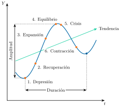
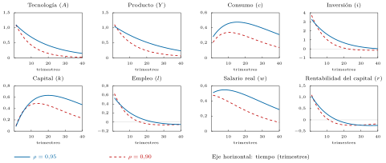
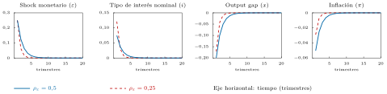

Apuntes para la oposición al Cuerpo de Diplomados Comerciales del Estado
12 Teorías de los ciclos económicos. Teorías del ciclo real y teorías de los nuevos keynesianos. Referencia al ciclo financiero y sus interrelaciones con el ciclo real.
Tema pendiente de revisión. Este tema está publicado pero aún no lo he revisado a fondo: puede contener erratas o partes por pulir.
12.1 Introducción  1'
1'
¿Crece una economía de forma lineal? La historia económica dice que no: a las fases de expansión les siguen siempre otras de contracción, y así de forma recurrente.
La Gran Depresión proporciona un ejemplo dramático, cuando la economía de EE. UU. se contrajo cerca de un 25 % entre 1929 y 1933. Más recientemente, la Gran Recesión de 2008 y la pandemia de COVID-19 han demostrado cómo los shocks sistémicos pueden romper una tendencia de crecimiento en un instante.
Frente a esta realidad, las teorías macroeconómicas han intentado analizar cómo se producen esas fluctuaciones o ciclos, entendidas como desviaciones temporales de las variables económicas en relación con su senda tendencial de crecimiento, con el fin de extraer conclusiones de política económica orientadas a la estabilización. El hilo conductor será la evolución de los modelos hasta los modelos de equilibrio general dinámicos y estocásticos (DSGE), que hoy utilizan los bancos centrales, y la incorporación a ellos del sector financiero tras la crisis de 2008.1
Por lo tanto, el objetivo de esta exposición será analizar las diferentes teorías explicativas de los ciclos económicos a través del siguiente esquema:
Definición y morfología de los ciclos.
Teoría tradicional de los ciclos.
Nueva Macroeconomía Clásica.
Teoría del Ciclo Económico Real.
Nueva Economía Keynesiana.
Ciclo financiero y su relación con el ciclo real.
Enfoques heterodoxos.
12.2 Definición y morfología de los ciclos 1'30"
El ciclo económico se define como el conjunto de fluctuaciones recurrentes, aunque no periódicas, de la actividad agregada en torno a su tendencia de crecimiento, que afectan a muchas variables a la vez y duran más de un año. Para caracterizarlo, es preciso hacer referencia a sus elementos, así como a las distintas fases del mismo y los hechos estilizados que llevan asociados.
Duración
Diferentes autores han identificado la duración de los ciclos:
Kitchin: ciclos muy cortos (18-36 meses) motivados por la reposición de stocks.
Juglar: ciclos cortos (8 años) debido a las innovaciones tecnológicas. Ciclos de negocios.
Kuznets: ciclos largos (20 años) debido a migraciones, cambios demográficos que impulsan fases de construcción.
Kondratiev: ciclos muy largos (47-60 años, de media unos 50) ligados, según Kondratiev, a la reposición de los bienes de capital básicos y, según Schumpeter (1939), a oleadas de innovaciones (máquina de vapor, ferrocarril…).2
Sin embargo, en la actualidad se ha abandonado la idea de identificar regularidades periódicas.
Elementos
Los principales elementos de los ciclos económicos son:
Impulso, es decir, qué es lo que origina el ciclo.
Propagación (o transmisión), por qué la perturbación se extiende al conjunto de la economía, afectando a múltiples variables y creando comovimientos.
Persistencia, es decir, qué explica la duración del ciclo.
Esta distinción entre impulso y propagación procede de Frisch (1933) y Slutsky (1937): perturbaciones aleatorias sobre un sistema estable generan oscilaciones persistentes (Argandoña Ramiz et al. 1997).
Fases
Los ciclos económicos presentan diferente morfología, tanto en lo relativo a intensidad (amplitud de las oscilaciones) como en su duración. Un ciclo económico de acuerdo con Lipsey presenta seis fases:
Depresión: punto mínimo. Caracterizado por un elevado desempleo, capacidad ociosa…
Recuperación: Fase en la que los empresarios más dinámicos empiezan a intuir la llegada de una fase expansiva de la economía, adoptando posiciones inversoras.
Expansión: La mejora de las expectativas se generaliza, recuperándose Y, L, C
Equilibrio: situación de empleo de toda la capacidad de la economía, en la que se empiezan a observar ciertos estrangulamientos de algunos sectores.
Crisis: Sobrevendrá repentinamente, al alterarse las expectativas de los agentes. Así, las inversiones innecesarias y no selectivas que se realizaban con el apoyo de la banca, dejan de llevarse a cabo.
Contracción o recesión: las inversiones que parecían rentables dejan de serlo. Los altos tipos de interés, que antes se sobrellevaban debido a los altos beneficios esperados, se convierten en una carga excesiva. Se producen quiebras y baja el empleo y la renta.
Estas seis fases, junto con la amplitud y la duración del ciclo, se ilustran en la Figura 12.1.

Identificación de los ciclos económicos
Para poder identificar y fechar los ciclos será necesario separar la tendencia del ciclo. Por ejemplo, el PIB de una economía es el resultado del PIB tendencial y el PIB cíclico: \[Y_{t}=Y^{g}_{t}\cdot Y^{c}_{t} \tag{12.1}\] tomando logaritmos podremos obtener la expresión lineal \[y_{t}=g_{t}+c_{t} \tag{12.2}\] sin embargo, sólo \(y_{t}\) es observable. Por consiguiente, el objetivo será separar la tendencia del ciclo.
Existen diferentes métodos pero el más utilizado es el Filtro de Hodrick y Prescott (1980), el cual determina el componente cíclico y el tendencial de una serie \(y_{t}\), minimizando la siguiente expresión \[\min\quad HP=\sum\limits_{t=1}^{T}\left(y_{t}-g_{t}\right)^{2}+\lambda\cdot\sum\limits_{t=2}^{T-1}\left[\left(g_{t+1}-g_{t}\right)-\left(g_{t}-g_{t-1}\right)\right]^{2} \tag{12.3}\]
El método consiste en minimizar la distancia entre la serie y el componente tendencial y por ende el componente cíclico –primer sumatorio– y minimizar las variaciones de la tasa de crecimiento del componente tendencial –segundo sumatorio de la función, una segunda diferencia–. Dado que estos dos objetivos están contrapuestos, el parámetro \(\lambda\) es elegido por el analista para ponderar la importancia de cada uno3.
Algunos hechos estilizados de los ciclos de negocios
Se obtienen de los componentes cíclicos de las principales macromagnitudes, separados con algún tipo de filtro como el anterior.
Volatilidad de los componentes cíclicos
La volatilidad se calcula como la desviación típica del componente cíclico de cada agregado macroeconómico. Se compara con la volatilidad del componente cíclico del PIB.
Para la economía de EEUU y buena parte de las de la OCDE, como España, se observan una serie de regularidades:
Consumo:
El consumo de bienes no duraderos es menos volátil que el PIB, mientras que
El consumo de bienes duraderos es más volátil.
Los servicios son menos volátiles que los bienes duraderos.
Inversión:
La inversión es aproximadamente tres veces más volátil que el producto y más volátil que el consumo.
En España, la inversión en construcción y bienes de equipo muestra alta sensibilidad cíclica.
Empleo:
El empleo, medido en horas trabajadas, es casi tan volátil como el PIB.
Las horas trabajadas por empleado son menos volátiles.
Salario real:
Mucho menos volátil que el PIB.
En España, los salarios muestran rigidez, especialmente en sectores regulados.
Los beneficios empresariales son más volátiles que los salarios.
La agricultura y los recursos naturales se comportan de forma independiente a los ciclos económicos.
Persistencia de los componentes cíclicos
La persistencia se calcula como el coeficiente de autocorrelación de primer orden del componente cíclico de cada agregado, \(\rho\left(c_{t},c_{t-1}\right)\), y se compara con la persistencia del componente cíclico del PIB.
Se obtienen así las siguientes regularidades:
Todas las variables macro presentan una elevada persistencia, cercana a 0,8.
En comparación con el componente cíclico del PIB:
El empleo es más persistente.
Los tipos de interés a corto y largo plazo son igual de persistentes.
La inflación suele ser menos persistente.
Correlación de los componentes cíclicos
La correlación se calcula como el coeficiente de correlación entre el componente cíclico del output y el componente cíclico de la macromagnitud: \(\rho\left(c^{y}_{t},c_{t-j}\right)\).
Correlación contemporánea\(\left(j=0\right)\)
el coeficiente de correlación contemporánea de cualquier componente cíclico de un agregado macroeconómico con el componente cíclico del producto. Así:
Si el valor es positivo, la variable es procíclica.
Si el valor es negativo, la variable es contracíclica.
Si no es significativo, la variable es acíclica.
Las regularidades obtenidas son las siguientes:
Procíclicas: consumo, inversión y empleo.
Débilmente procíclicas: salarios reales e inflación.
Contracíclica: la inflación puede comportarse así ante shocks de oferta.
Correlación adelantada en el otro agregado macro \(\left(j>0\right)\)
correlación entre el componente cíclico del PIB en \(t\) con componentes cíclicos de otras macromagnitudes de \(t-1\).
Indicadores como la confianza del consumidor, el PMI manufacturero y los pedidos de bienes duraderos suelen anticipar el PIB en 1–2 trimestres.
En España, los indicadores de confianza empresarial han demostrado ser buenos predictores de la actividad.
Correlación con rezagos en el otro agregado macro \(\left(j<0\right)\)
- El empleo suele reaccionar con retraso respecto al PIB, normalmente 1 trimestre, especialmente en sectores con alta regulación laboral.
12.3 Teoría tradicional de los ciclos 1'
Los hechos estilizados anteriores son lo que cualquier teoría del ciclo debe ser capaz de explicar. A lo largo del siglo XX, la investigación de los ciclos ha enfrentado a los que pensaban que el origen de las fluctuaciones era nominal y los que pensaban que era real. Se puede distinguir entre teorías:
De carácter exógeno:Fluctuaciones cíclicas como consecuencia de perturbaciones aleatorias exógenas de carácter recurrente que distorsionan el sistema económico intrínsecamente estable. Destacan:
Monetarias: Hawtrey se centra en la influencia que el crédito y las restricciones monetarias tienen sobre las decisiones de inversión vía disponibilidad de fondos prestables que dependen del tipo de interés. El origen de los ciclos económicos se encuentra en la oferta de dinero.
Reales: A partir de los años veinte se afianzan las explicaciones del ciclo por causas reales.
Teorías de la sobrecapitalización: Origen: una aceleración excesiva de la producción de bienes de capital durante las fases de expansión por el exceso de dinamismo empresarial provoca un exceso de capacidad productiva que, a su vez, incita a la reducción de inversión y, con ello, las crisis.
Teoría del infraconsumo (Douglas y Hobson): las depresiones se producen por un incremento del ahorro que da lugar a una caída del consumo, de modo que este es insuficiente para absorber la producción, especialmente en periodos de fuerte desarrollo tecnológico y reducción en los costes de producción.
Teorías psicológicas (Pigou, Keynes, Aftalion y Beveridge): completan las anteriores introduciendo los efectos de las anticipaciones pesimistas y optimistas de los agentes4.
Teorías de los fenómenos naturales como la variación de las cosechas agrícolas o de la temperatura.
Teoría de la destrucción creativa (Schumpeter 1942): el movimiento expansivo se debe a la puesta en marcha de la innovación cuyo agotamiento revierte a una depresión.
De carácter endógeno: Los ciclos económicos son la consecuencia de la propia dinámica interna del sistema capitalista.
Aportaciones keynesianas
La crisis de los años treinta tuvo un efecto negativo sobre la investigación de los ciclos reales. Los economistas empezaron a creer que la Microeconomía no era la base adecuada para estudiarlos.
Así, se desarrollan teorías que parten de las aportaciones de Keynes en su Teoría General (1936). Si bien su libro no constituye un tratado sobre ciclos económicos, se desprende la idea de que las fluctuaciones se deben a la volatilidad de la eficiencia marginal del capital sujeta a las expectativas empresariales –animal spirits–.
Ello sienta la base de los modelos endógenos:
Modelo de ciclos de Samuelson (1939) sugiere que es la interacción entre el multiplicador keynesiano y el principio de aceleración (componente inducido de la función de inversión, I, proporcional a la variación del consumo, \(I_{t}=v\cdot\left(C_{t}-C_{t-1}\right)\)) el que da lugar a las fluctuaciones cíclicas de la actividad económica. Así que el impulso es una perturbación en la demanda de inversión (a través del componente autónomo) y el mecanismo de propagación y persistencia es la interacción entre el multiplicador y el acelerador. Bajo esta lógica, para ciertos valores de la propensión marginal a consumir y del acelerador, cualquier perturbación de demanda que aleje momentáneamente la renta de su nivel de equilibrio producirá fluctuaciones cíclicas. Así, esta sería la primera aproximación a la definición tradicional del ciclo.
Modelo de Hicks (1950): al igual que en Samuelson, implica que la existencia de ciclos estables depende del valor del acelerador. No obstante, Hicks limita la inestabilidad de los ciclos al considerar que existen suelos y techos que limitan las fluctuaciones – dados por la inversión autónoma y el pleno empleo respectivamente–.
Monetaristas
La escuela monetarista, liderada por Milton Friedman, sostiene que los ciclos económicos tienen un origen y una dinámica esencialmente monetarios. El principal factor de inestabilidad no es la demanda agregada o los shocks tecnológicos, sino la política monetaria discrecional de los bancos centrales, a la que consideran una fuente de error y desequilibrio.
En su influyente obra Historia monetaria de los EE.UU, 1867-1960, Milton Friedman y Anna Schwartz (1963) sostienen que los cambios en la cantidad de dinero han sido un factor causal relevante de las fluctuaciones de la economía estadounidense durante ese periodo.
Impulso: El ciclo económico se inicia con un shock monetario causado por decisiones erróneas de la autoridad monetaria, como una expansión o contracción inesperada de la oferta de dinero. Friedman argumentó que estos "tirones" ("plucking")5 aleatorios apartan a la economía de su senda de crecimiento potencial a largo plazo.
Propagación (Mecanismos de transmisión): El shock monetario se propaga a través de dos canales principales:
Canal de la demanda: Una expansión monetaria aumenta la cantidad de dinero en la economía. Los agentes, al tener más liquidez, la intercambian por otros activos (inmobiliarios, acciones, etc.), lo que eleva el precio de estos activos y reduce sus tasas de retorno. Este "efecto riqueza" estimula el consumo y la inversión, impulsando la actividad económica.
Canal de la oferta: La expansión monetaria provoca una subida de precios mayor de lo esperado por los trabajadores. Como los salarios nominales no se ajustan de inmediato, el salario real disminuye. Esto hace que las empresas contraten a más trabajadores, aumentando el empleo y la producción.
Persistencia (Ajuste): La persistencia del ciclo se debe a la lentitud con la que los agentes ajustan sus expectativas. A medida que los trabajadores y las empresas se dan cuenta de que el nivel de precios ha subido, revisan sus expectativas de inflación. Los trabajadores exigen salarios nominales más altos para recuperar el poder adquisitivo perdido, lo que revierte la caída del salario real, reduciendo el empleo y la producción hasta que la economía vuelve a su nivel natural. Este proceso de ajuste, que da lugar a la teoría aceleracionista de la inflación, hace que la política monetaria solo tenga efectos reales a corto plazo, mientras que a largo plazo solo afecta a los precios.
Relación con la Gran Depresión
Para los monetaristas, la Gran Depresión no fue una falla del capitalismo, sino un colosal fallo de la política monetaria. Friedman y Schwartz argumentaron que la Reserva Federal no actuó para inyectar liquidez y detener la caída de la oferta monetaria. Esta omisión, según ellos, transformó una recesión normal en la mayor contracción de la historia de EE. UU.
12.4 Nueva Macroeconomía Clásica 2'30"
Los monetaristas introdujeron las expectativas en el análisis del ciclo, pero adaptativas, lo que admite errores sistemáticos de los agentes. Este es el punto de partida de la Nueva Macroeconomía Clásica, que supondrá una revolución a la hora de estudiar los ciclos económicos:
La crítica de Lucas (1976) señaló que los modelos de la síntesis neoclásica (el keynesianismo basado en el IS-LM y la curva de Phillips) no sirven para evaluar políticas económicas, ya que no contemplan la posibilidad de que un shock o una política alteren las decisiones de los agentes que, racionalmente, ajustan y modifican la estructura (parámetros) sobre la cual se busca, a priori, analizar dicha política.
La inclusión de la Hipótesis de Expectativas Racionales (HER), formulada por Muth (1961), implica que los agentes ya no cometen errores sistemáticos porque utilizan eficientemente toda la información de la que disponen, criticando la Hipótesis de Expectativas Adaptativas (HEA) de Friedman ya que conducía a la posibilidad de errores sistemáticos. \[P^{e}_{t}=\mathbb{E}\left(P_{t}|\Omega_{t-1}\right) \tag{12.4}\]
Por consiguiente el estudio de los ciclos precisa de modelos económicos microfundamentados.
Modelo
En ese sentido, Robert Lucas (1972) fue el primero en construir un modelo de equilibrio general con HER, derivando la teoría de los ciclos de la curva de oferta. Dicho modelo parte de los siguientes supuestos:
Los productores tienen expectativas racionales.
Las decisiones de los productores dependen de los precios relativos.
Los mercados son competitivos
Información incompleta basándose en la parábola de las islas de Phelps (De Vroey 2016, 157-58): cada productor se encuentra en un mercado competitivo aislado –islas– afectado por perturbaciones agregadas o de carácter específico, sin que el productor pueda discernir el origen de los shocks. Así, la respuesta en cada caso es diferente:
Si el shock es específico a su mercado –aumenta el precio del bien que produce–, desearía aumentar su producción
Si es agregado –aumenta el nivel general de precios–, no desearía elevar su producción
A partir de estos supuestos se obtendrá la curva de oferta y añadiendo la curva de demanda agregada aplicando la teoría cuantitativa del dinero, Lucas obtiene la oferta agregada que explica los ciclos: \[y_{t}=y^{n}_{t}+\dfrac{\beta}{1+\beta}\cdot\left(m_{t}-\mathbb{E}\left(m_{t}|\Omega_{t-1}\right)\right)+\alpha\left(y_{t-1}-y^{n}_{t-1}\right) \tag{12.5}\] donde el parámetro \(\beta\)6 depende de la variabilidad relativa de las perturbaciones generales y de las perturbaciones específicas a un único mercado. Así, la producción solo se aparta de su nivel natural ante la parte no anticipada de la oferta monetaria, y cuanto más variable sea esta, menos responderá la producción a cada sorpresa.
Explicación del ciclo
El impulso lo constituyen las perturbaciones monetarias.
La propagación y la persistencia vienen explicadas por el output gap, \(y_{t-1}-y^{n}_{t-1}\), que se justifica mediante:
La existencia de costes de ajuste en la producción y el empleo (Sargent 1979).
Las decisiones sobre acumulación de capital: los proyectos de inversión llevan tiempo y las empresas pueden preferir absorber las perturbaciones a través de stocks (Lucas 1975).
La sustitución intertemporal del ocio de Lucas y Rapping (1969).
Implicaciones de política económica
Las implicaciones de política económica son:
La política monetaria es inefectiva a no ser que sea sorpresiva.
Recomiendan una política económica estable para que no haya problemas de credibilidad e inconsistencia dinámica.
Los ciclos no representan necesariamente situaciones de desequilibrio ni ineficiencias, por lo que no son imperativas las medidas de política económica.
Críticas
Sin embargo, la teoría del ciclo de Lucas está sujeta a críticas:
La principal crítica a esta teoría de los ciclos es que solo es válida para explicar los ciclos de corta duración, ya que los errores de predicción provocados por sorpresas monetarias duran poco7.
Mecanismo de propagación se introduce ad-hoc.
Conforme los shocks monetarios sean más variables, los agentes adaptarán esto a sus expectativas y menor será la probabilidad de que los shocks monetarios tengan efectos reales.
La crítica más importante vendrá de Nelson y Plosser (1982), y de Kydland y Prescott (1982), que señalan que los ciclos no se producen por factores monetarios, sino que los ciclos se producen por shocks reales. Además, señalarán que estos shocks serán de oferta –contexto de shock del petróleo–.
Estos últimos autores darán lugar a la Teoría del Ciclo Económico Real.
12.5 Teoría del Ciclo Económico Real 4'30"
Por su parte, la Teoría del Ciclo Económico Real (TCR, en inglés Real Business Cycle o RBC) trata de superar las limitaciones de Lucas. Los ciclos se deben a factores reales y no a perturbaciones monetarias. La TCR parte del modelo de crecimiento de Ramsey en el que introduce incertidumbre, la elección entre consumo y ocio por parte de los hogares y la existencia de perturbaciones sobre la productividad total de los factores. Son los conocidos como modelos de Equilibrio General, Dinámicos y Estocásticos (DSGE)8, que servirán no solo de análisis de ciclos sino de análisis macroeconómico en general. El modelo TCR es así el primer DSGE y el punto de partida de los modelos neokeynesianos que se estudian después.
Así, los hogares toman decisiones intertemporales para maximizar su función de utilidad, que depende del ocio y del consumo y de un factor de descuento, \(\beta\) \[\max\quad\sum\limits_{t=0}^{\infty}\beta^{t}\cdot U\left(c_{t},o_{t}\right)\] sujeta a una restricción presupuestaria donde consumo e inversión se igualan a las rentas del trabajo y del capital \[c_{t}+i_{t}=w_{t}\cdot l_{t}+r_{t}\cdot k_{t} \tag{12.6}\] donde el capital evoluciona de la siguiente manera \[k_{t+1}=i_{t}+\left(1-\delta\right)k_{t} \tag{12.7}\]
Las empresas actúan en un entorno competitivo, maximizando sus beneficios y su tecnología de producción viene dada por una función de producción con rendimientos constantes a escala y productividad marginal de los factores positiva pero decreciente \[Y_{t}=A_{t}\cdot F\left(k_{t},l_{t}\right) \tag{12.8}\] donde \(A_{t}\) representa la tecnología, es decir, la productividad total de los factores, que se mide con el residuo de Solow, la parte del producto que no se explica por la cantidad de capital y de trabajo. Sigue un proceso autorregresivo de primer orden de la forma, donde \(|\rho|<1\) para asegurar la estacionariedad del proceso \[\log A_{t}=\rho\cdot\log A_{t-1}+\varepsilon_{t} \tag{12.9}\] y donde \(\varepsilon_{t}\) es una perturbación o shock aleatorio de origen real. Además, los mercados de bienes y de factores son competitivos.
El equilibrio del modelo vendrá dado por una secuencia de consumo, ocio e inversión por parte de los consumidores \(\left\{ c_{t},o_{t},i_{t}\right\} ^{\infty}_{t=0}\) y una secuencia de capital y de horas de trabajo utilizadas por parte de las empresas \(\left\{ k_{t},l_{t}\right\} ^{\infty}_{t=0}\), tal que dada una secuencia de precios \(\left\{ r_{t},w_{t}\right\} ^{\infty}_{t=0}\) los agentes maximizan sus funciones objetivo y el mercado se vacía.
Calibración
Idea: Kydland y Prescott (1982) introdujeron la calibración. En lugar de estimar los parámetros con las series del ciclo, se fijan a partir de otra información, como la participación de los factores en la renta y las relaciones capital-producto e inversión-producto.
Valores: Una calibración habitual, la de Hansen y Wright, que recoge Romer (2012, 218), fija la participación del capital en la renta en 0,36, la depreciación en un 2,5 % trimestral y, para la tecnología, un coeficiente autorregresivo ρ de 0,95 y una desviación típica del shock de alrededor del 0,7 % sobre la productividad total de los factores.9 Estos dos últimos valores se obtienen del comportamiento del residuo de Solow.
Contraste: Con estos valores se simula el modelo y se comparan los momentos que genera, es decir, las volatilidades y las correlaciones, con los de los datos.10
Explicación del ciclo
Así, en el modelo de Kydland y Prescott
El mecanismo de impulso son las perturbaciones tecnológicas aleatorias. Es decir, el mecanismo de impulso que genera los ciclos tiene un origen real, se producen shocks \(\varepsilon_{t}\) sobre la tecnología que hacen que aumente o disminuya la PTF. Si la economía se encuentra en el estado estacionario y se produce un shock tecnológico positivo, aumentará la PTF y, por tanto, la demanda de trabajo y el salario real.
El mecanismo de propagación de la perturbación se producirá por la sustitución intertemporal del ocio y dependerá de la persistencia de la perturbación. La sustitución intertemporal del ocio (o del trabajo) depende de la relación entre el salario presente y el salario futuro (y del tipo de interés). Así, si se produce en el período presente una perturbación de la PTF de carácter:
Temporal: aumenta el salario real presente respecto al futuro lo que implica que el ocio se encarece relativamente, por lo que los hogares tienden a aumentar su oferta de trabajo en ese período. Por lo tanto, se producirá un ciclo.
Permanente: el salario real aumenta en todos los períodos, por lo que los salarios relativos no se modifican y desaparece el efecto de sustitución intertemporal del ocio. Aun así, la oferta de trabajo responde algo, porque la mayor productividad marginal del capital eleva transitoriamente el tipo de interés real e incentiva a trabajar más para invertir más (Romer 2012, 214-15). La respuesta del empleo, y por tanto el ciclo, es mucho menor y más gradual que ante un shock temporal.
El mecanismo de propagación y persistencia de las perturbaciones en el tiempo se explica por distintos elementos:
Time to build (Kydland y Prescott 1982): ante una perturbación positiva, las empresas desearán construir nuevas instalaciones que lleva tiempo concluir y que una vez ejecutadas no son reversibles.
Costes de ajuste en el empleo (Sargent 1979): ante un incremento de la productividad marginal del trabajo, las empresas no contratan inmediatamente por la existencia de costes de ajuste, lo que da mayor persistencia a la perturbación.
Implicaciones de política económica
Las implicaciones de política económica son que el ciclo es, en todo momento, un fenómeno Pareto eficiente –los ciclos son un fenómeno de equilibrio–, ya que es consecuencia de las decisiones óptimas de los agentes, siendo todo el desempleo voluntario, por lo que no es recomendable ni deseable una política económica estabilizadora y las recesiones no son malas.
Críticas
No obstante, aunque los modelos de ciclo real consiguen replicar en parte las propiedades cíclicas de economías como Estados Unidos, están sujetos a críticas:
El mecanismo de sustitución intertemporal implica que los salarios son fuertemente procíclicos, pero la evidencia empírica muestra que son poco procíclicos.
El mecanismo de impulso se basa en las perturbaciones tecnológicas, pero el progreso técnico es estable a corto plazo y no suelen existir reversiones de la tecnología, por lo que es difícil explicar los ciclos y, en particular, las recesiones11.
El modelo básico de la TCR no contempla la existencia de desempleo involuntario.
El modelo reproduce bien la volatilidad relativa del consumo y de la inversión, pero sus resultados no concuerdan con la evidencia empírica en el mercado de trabajo:
Las horas trabajadas son mucho menos volátiles en el modelo que en los datos: su desviación típica relativa a la del producto es 0,49 frente a 0,96 en Estados Unidos (Romer 2012, 219).
El empleo y la productividad del trabajo se mueven casi a la par en el modelo (correlación de 0,93), mientras que en los datos están prácticamente incorrelacionados (\(-\)0,14).
Salario real muy procíclico, cuando solo es moderadamente procíclico.
Tipo de interés real muy procíclico, cuando en los datos está correlacionado negativamente con el producto (King y Rebelo 1999, sec. 4.3).
El modelo implica neutralidad monetaria. Sin embargo, existe una sólida evidencia de que los shocks monetarios tienen importantes efectos reales. Las explicaciones candidatas para ello descansan en el ajuste nominal incompleto de precios o salarios. Y este ajuste nominal incompleto es más probable cuando los mercados de trabajo, crédito y bienes se alejan significativamente del caso competitivo supuesto por el RBC.
Dadas estas críticas, la Nueva Economía Keynesiana va a desarrollar modelos que incorporen rigideces nominales y reales además de los efectos de la política monetaria.
12.6 Nueva Economía Keynesiana 5'30"
La Nueva Economía Keynesiana (NEK) surge también a raíz de la crítica de Lucas. Sus autores aceptan tanto la HER como la necesidad de la microfundamentación, pero no la información perfecta ni el vaciado continuo de los mercados, es decir, añaden elementos keynesianos al análisis. La segunda generación dará lugar a los modelos DSGE neokeynesianos que hoy utilizan los bancos centrales. A continuación se analizarán las 2 generaciones de esta escuela. La siguiente tabla resume las diferencias entre ambas generaciones12.
| Primera generación | Segunda generación | |
|---|---|---|
| Principal objeto de estudio | Desempleo y subempleo | Política monetaria óptima |
| ¿Aproximación dinámica? | Mayormente estático | Dinámico |
| ¿Equilibrio general? | Equilibrio general incompleto | Equilibrio general |
| Vaciado de mercado | No vaciado de mercado (en el sentido de igualación de oferta y demanda) | Vaciado de mercado |
| Punto de vista sobre la síntesis neoclásica | Defensa de una visión ecléctica | Defensa de un estilo homogéneo de Macroeconomía walrasiana |
Primera generación
Los autores de la primera generación subrayan los fallos de coordinación y las imperfecciones en el mercado debido a la existencia de fricciones nominales y rigideces reales13.
Rigideces nominales
Entre las fricciones nominales se encuentran:
Los costes de menú, planteados por Mankiw (1985)14, son pequeños costes asociados a los ajustes de precios. Si estos costes de menú asociados a ajustar los precios son mayores que los beneficios que obtiene la empresa de ajustar precios, entonces responderá a las perturbaciones vía cantidades, con modificaciones del empleo y la producción. Aunque el coste sea pequeño, la pérdida privada de la empresa por no ajustar el precio es de segundo orden, mientras que la pérdida para el conjunto de la economía, a través de la demanda agregada, es de primer orden. Esta externalidad de demanda agregada es lo que permite que costes pequeños expliquen grandes fluctuaciones (Mankiw 1985).
Racionalidad limitada, en su versión de casi-racionalidad planteada por Akerlof y Yellen (1985b, 1985a), supone que los agentes usan en sus decisiones reglas aproximadamente racionales, porque seguir reglas completamente racionales requiere unos costes en términos de tiempo, información y cálculo muy elevados, mientras que la pérdida de no optimizar con exactitud es de segundo orden. Esto lleva a que los ajustes de precios no sean automáticos frente a perturbaciones, explicando las fluctuaciones en empleo y producción.
Rigideces reales
Sin embargo, la evidencia empírica de la NEK concluye que estas fricciones nominales no son suficientes para explicar las fluctuaciones, por lo que ponen el acento en las rigideces reales de los distintos mercados:
Mercado de bienes, como la colusión contracíclica, donde las empresas reducirían el margen durante las expansiones para ganar cuota de mercado y lo aumentarían en las recesiones al incrementarse la colusión.
Mercado de trabajo, con los contratos implícitos, con una relación de aseguramiento entre la empresa y el trabajador, por lo que el salario no se incrementa en las expansiones, ni se reduce en las recesiones.
Mercado de crédito, como en el modelo de Stiglitz y Weiss (1981) donde debido a asimetrías informativas, dará lugar a un racionamiento de crédito, por lo que las empresas no dispondrán de financiación suficiente, dando lugar a una mayor fluctuación de la producción y el empleo.
En resumen, la rigidez nominal es la lentitud con que se ajustan los precios y salarios fijados en dinero, mientras que la rigidez real es la escasa respuesta de los precios relativos, como el salario real o el margen, a los cambios de la actividad. La rigidez real no basta por sí sola para que el dinero tenga efectos reales, pero amplifica los de una rigidez nominal pequeña, y por eso ambas son necesarias para explicar por qué las economías no se ajustan de forma instantánea a los shocks.
Segunda generación
La primera generación se centró en explicar la existencia de fricciones en modelos mayormente estáticos. Los nuevos keynesianos de segunda generación, tales como Jordi Galí u Olivier Blanchard, se basan en los supuestos de la TCR pero con algunas diferencias. Sus modelos son DSGE: mantienen la estructura del ciclo real, con agentes que optimizan y expectativas racionales, y le añaden competencia imperfecta y rigideces nominales, lo que permite que la política monetaria tenga efectos reales. El caso más sencillo es el modelo de tres ecuaciones que se presenta a continuación. Las versiones estimadas, como las de Christiano, Eichenbaum y Evans (2005) o las de Smets y Wouters (2003), incorporan además capital, hábitos de consumo y más rigideces.15
Supuestos
Competencia monopolística, si queremos que exista rigidez en precios, debemos imponer para empezar que las empresas pueden fijar precios.
Ajuste escalonado en precios a la Calvo1617, que serán claves para explicar la no neutralidad monetaria.
Modelo sin capital, los bonos actúan de vehículo intertemporal de recursos18.
Además de perturbaciones tecnológicas el modelo recoge perturbaciones monetarias.
Modelo de 3 ecuaciones
Bajo estos supuestos se presenta el modelo canónico básico de la NEK (Clarida et al. 1999; Galí 2008). Se deriva de la optimización de los hogares, que da la IS dinámica, y de la optimización de las empresas con precios a la Calvo, que da la curva de Phillips, mientras que la regla de Taylor (1993) es un supuesto sobre la conducta del banco central. El modelo consta de:
Ecuación IS dinámica19, que se obtiene del problema de maximización de utilidad intertemporal de los hogares y representa el lado de la demanda del modelo \[x_{t}=\mathbb{E}\left(x_{t+1}\right)-\dfrac{1}{\theta}\cdot\left(i_{t}-\mathbb{E}\left[\pi_{t+1}\right]-r^{n}_{t}\right)+u_{t} \tag{12.10}\] establece que, por el lado de la demanda existe una relación de equilibrio entre el output gap, \(x_{t}\), y el tipo de interés nominal, \(i_{t}\), condicionada a las expectativas sobre la inflación futura, \(\mathbb{E}\left[\pi_{t+1}\right]\), y del output gap futuro, \(\mathbb{E}\left[x_{t+1}\right]\), y del shock de demanda, \(u_{t}\).
Ecuación curva de Phillips20 que se obtiene del problema de optimización de las empresas y de la fijación de precios (a la Calvo), siendo una versión forward-looking de la curva de Phillips tradicional, dando lugar al lado de la oferta del modelo \[\pi_{t}=\beta\cdot\mathbb{E}\left(\pi_{t+1}\right)+\kappa\cdot x_{t}+e_{t} \tag{12.11}\] relaciona la inflación actual, \(\pi_{t}\), con las expectativas de inflación futura y con el output gap, \(x_{t}\), donde \(\kappa\) mide la sensibilidad al ciclo económico.21
Regla monetaria que sigue el banco central, de tipo Taylor, para ajustarse a unos objetivos de inflación, \(\pi_{T}\) y output gap, donde los parámetros \(\phi\) son el peso relativo que le asigna el banco al gap de inflación y de producción22 \[i_{t}=r^{n}_{t}+\pi_{t}+\phi_{\pi}\cdot\left(\pi_{t}-\pi_{T}\right)+\phi_{x}\cdot x_{t}+{\varepsilon_{t}} \tag{12.12}\] así, si la inflación o el output gap aumentan por encima de sus valores,23 entonces el banco central aumenta tipos para poder enfriar la economía.24
Resultados
Un resultado esencial del modelo NEK es la no-neutralidad de la política monetaria en el corto plazo. Esto se debe a la presencia de rigideces nominales, como precios fijados por contratos o ajustes lentos en los salarios, que impiden que los cambios en el tipo de interés nominal se compensen plenamente con variaciones en la inflación esperada. En otras palabras, los tipos de interés nominales no se ajustan automáticamente por cambios en las expectativas de inflación, lo que genera alteraciones en el tipo de interés real.25
Estos cambios en los tipos de interés reales afectan directamente al consumo y la inversión. Como resultado, se producen variaciones en el producto y el empleo, ya que las empresas consideran óptimo ajustar su oferta de bienes al nuevo nivel de demanda.
Este mecanismo se basa en dos pilares fundamentales del modelo NEK:
Precios rígidos tipo Calvo: Las empresas no pueden ajustar sus precios en cada periodo, lo que introduce fricciones nominales.
Expectativas racionales: Los agentes económicos forman sus expectativas de manera consistente con el modelo.
Además, este marco teórico justifica el uso de reglas de política monetaria como la regla de Taylor, que establece cómo debe reaccionar el banco central ante desviaciones de la inflación y del producto respecto a sus valores objetivos.
En el largo plazo, todos los precios y salarios se ajustan, y la economía converge hacia su equilibrio natural, donde la política monetaria vuelve a ser neutral.
Implicaciones de política económica
Bajo este enfoque, ahora la respuesta de la economía a los diferentes shocks o ciclo será en general ineficiente y la no neutralidad de la política monetaria resultante de la presencia de rigideces nominales abre la puerta a que las intervenciones de la Autoridad Monetaria incrementen el bienestar en tanto reducirán las distorsiones existentes.
Uno de esos resultados es la conocida como “divina coincidencia”, supone que, de acuerdo con el modelo canónico de la NEK, bajo ciertas condiciones y en ausencia de imperfecciones reales relevantes, los bancos centrales pueden usar la política monetaria para estabilizar simultáneamente inflación y actividad, sin conflicto entre estos dos objetivos, fijando el tipo de interés de modo que replique la evolución del tipo de interés natural26.
Esto supone que los bancos centrales tienen que centrarse únicamente en el objetivo de inflación y conseguirán simultáneamente estabilizar la actividad27.
Explicación del ciclo
Con el modelo de tres ecuaciones, el ciclo se explica del siguiente modo:
Origen del ciclo:
Es exógeno y aleatorio.
Los shocks transitorios pueden ser reales (tecnología, preferencias) o nominales (política monetaria).
A diferencia del enfoque de los modelos de Ciclo Real (TCR), el modelo NEK admite múltiples fuentes de perturbación.
Propagación:
Se produce por el carácter de equilibrio general del modelo.
Las decisiones de empresas y consumidores están interconectadas: cambios en expectativas, precios o tipos de interés afectan simultáneamente a oferta y demanda.
Persistencia28:
En el modelo básico procede de la persistencia supuesta de los shocks, que siguen procesos autorregresivos. Las versiones estimadas añaden hábitos de consumo y más rigideces, que dan inercia al propio modelo.
Las rigideces a la Calvo hacen que el nivel de precios se ajuste poco a poco, pero en el modelo básico no dan persistencia propia al output gap ni a la inflación: si el shock dura un solo periodo, sus efectos también.29
Postura sobre la Flexibilidad
Esta segunda generación mantiene las rigideces de precios y salarios, que en los modelos de precios escalonados à la Calvo son la base de la curva de Phillips neokeynesiana. Ahora bien, siguiendo las ideas de Keynes y Tobin, estos modelos argumentan que una flexibilidad excesiva de los precios y salarios podría, de hecho, ser desestabilizadora. Por ejemplo, una caída generalizada de salarios podría reducir la demanda agregada y aumentar la carga de la deuda real, generando una espiral deflacionaria.
12.7 Ciclo financiero y su relación con el ciclo real 2'30"
Hasta aquí el sector financiero ha sido un velo. En el modelo de tres ecuaciones los mercados de capital son perfectos y la estructura financiera de las empresas es irrelevante para las decisiones reales. La crisis financiera global de 2008 mostró que esa omisión era un fallo de fondo, y de ahí el interés por el ciclo financiero y por su relación con el ciclo real.
Concepto y rasgos
Borio (2014) define el ciclo financiero como las interacciones que se refuerzan a sí mismas entre las percepciones de valor y de riesgo, la actitud ante el riesgo y las restricciones de financiación. Estas interacciones pueden amplificar las fluctuaciones económicas y llevar a crisis financieras graves. Se describe de forma parsimoniosa con dos variables, el crédito y los precios de los activos inmobiliarios, y presenta cuatro rasgos:
Frecuencia mucho menor que la del ciclo económico: el ciclo real abarca entre 1 y 8 años, mientras que el ciclo financiero dura de media unos 16 años en siete países industrializados desde los años sesenta.
Sus picos coinciden con crisis bancarias sistémicas: todas las crisis financieras de origen interno ocurren en el pico del ciclo o cerca de él.
Las recesiones que coinciden con su fase de contracción son más graves: el PIB cae de media un 50 % más que en las demás (Drehmann et al. 2012).
Se puede medir en tiempo real: las desviaciones positivas simultáneas de la ratio crédito sobre PIB y de los precios de los activos, en especial los inmobiliarios, respecto a sus normas históricas son los mejores indicadores adelantados de crisis.
Ambos ciclos interactúan, pero ni tienen la misma duración ni coinciden en el tiempo.
El sector financiero como amplificador del ciclo real
El acelerador financiero de Bernanke, Gertler y Gilchrist (1999) incorpora la fricción financiera a un modelo neokeynesiano dinámico con precios rígidos à la Calvo. La prima de financiación externa, es decir, la diferencia entre el coste de los fondos obtenidos fuera de la empresa y el coste de oportunidad de los fondos propios, depende inversamente del patrimonio neto del prestatario. Como ese patrimonio es procíclico, porque lo son los beneficios y los precios de los activos, la prima es contracíclica y amplifica las oscilaciones del crédito y de la inversión. Una caída inicial de la actividad reduce beneficios y precios de los activos, encarece la financiación y deprime todavía más la inversión.
Kiyotaki y Moore (1997) obtienen una amplificación análoga a través del colateral. Cuando los prestamistas no pueden obligar a devolver las deudas salvo que estén garantizadas, los activos duraderos son a la vez factor de producción y garantía de los préstamos. La interacción entre los límites de crédito y los precios de los activos hace que perturbaciones pequeñas y temporales de la tecnología o de la distribución de la renta generen fluctuaciones grandes y persistentes de la producción y de los precios de los activos. Esta espiral recuerda a la hipótesis de la inestabilidad financiera de Minsky, que se verá a continuación en los enfoques heterodoxos.
Otros canales de propagación
Además del acelerador financiero y del colateral, algunos desarrollos de la segunda generación de la NEK incorporan la idea de ciclos financieros endógenos, al añadir fricciones financieras al modelo base. Esto significa que los ciclos no solo son impulsados por shocks externos, sino que los propios mercados financieros generan y amplifican las fluctuaciones.
Causas y Mecanismos de Propagación
Estos ciclos financieros endógenos se originan a partir de dos causas principales:
Burbujas especulativas: El estallido de burbujas en el mercado de activos (como las inmobiliarias o bursátiles) genera un impulso negativo que se propaga a la economía real.
Desregulación financiera: La falta de regulación en los mercados puede llevar a una excesiva asunción de riesgos, lo que aumenta la fragilidad del sistema y la probabilidad de una crisis.
Estos shocks se propagan y amplifican a través de tres canales clave que conectan el sector financiero con la economía real:
Efecto riqueza: El colapso de los precios de los activos disminuye la riqueza de los hogares y las empresas. Esto reduce su capacidad para consumir e invertir, lo que desacelera la demanda agregada.
Racionamiento del crédito: situación en la que, al tipo de interés vigente, la demanda de crédito supera a la oferta y los bancos no suben el tipo. El modelo de Stiglitz y Weiss explica cómo la información asimétrica lleva a los bancos a racionar el crédito, incluso si los prestatarios están dispuestos a pagar tipos de interés más altos. A diferencia del acelerador financiero, que encarece el crédito cuando cae el patrimonio, el racionamiento actúa sobre la cantidad y no sobre el precio. Además, la caída en el valor de los activos utilizados como garantía (colateral) dificulta a las empresas y a los hogares obtener nuevos préstamos.30
Desapalancamiento: Ante la caída de los activos, los agentes se ven forzados a reducir su deuda. Esto implica vender activos, lo que deprime aún más sus precios y crea una espiral descendente.
Implicaciones de política económica
Si el ciclo financiero es más largo que el económico y sus picos se asocian a crisis, la política económica debe actuar sobre él de forma específica. Borio (2014) propone dos ajustes. En la política prudencial, reforzar su orientación macroprudencial, es decir, acumular colchones en las fases buenas, cuando las vulnerabilidades financieras crecen, para poder utilizarlos en las malas. Basilea III ha introducido con este fin el colchón de capital anticíclico. En la política monetaria, adoptar estrategias que permitan endurecer la política para frenar la acumulación de desequilibrios financieros incluso con inflación contenida a corto plazo, la llamada «opción de leaning» (lean option). Este último punto sigue siendo controvertido.31
El caso de España
El Banco de España fija el colchón de capital anticíclico a partir de indicadores de riesgo sistémico cíclico, entre ellos la brecha de crédito sobre PIB. A cierre de 2025, el indicador sintético y cada uno de sus subcomponentes se mantenían en un nivel intermedio, con la brecha de crédito sobre PIB todavía negativa pero ascendente. En octubre de 2025 se decidió elevar el colchón del 0,5 % al 1 %, exigible a partir de octubre de 2026 (Banco de España 2026, 167). Al mismo tiempo, los precios de la vivienda aceleraron en 2025 hasta el 12,7 % nominal, aunque el propio informe subraya que la situación difiere de la observada antes de la crisis financiera global (pp. 19 y 99). ¿Basta entonces la política monetaria para estabilizar un ciclo que dura el doble que el económico?
12.8 Enfoques heterodoxos 1'
Entre los enfoques heterodoxos cabe destacar la hipótesis de inestabilidad financiera y la explicación de la escuela austriaca al ciclo.32
Hipótesis de la inestabilidad financiera
La hipótesis de la inestabilidad financiera, formulada por Hyman Minsky, sostiene que las economías capitalistas están intrínsecamente expuestas a ciclos financieros que pueden desembocar en crisis, incluso sin la intervención de factores externos. Esta teoría se basa en la idea de que la estabilidad prolongada genera comportamientos que, paradójicamente, conducen a la inestabilidad.
Dinámica del ciclo financiero
Durante las fases expansivas del ciclo económico, los agentes financieros —especialmente los inversores y prestatarios— tienden a asumir mayores niveles de riesgo y endeudamiento, alentados por la aparente solidez del entorno económico. Sin embargo, en un momento determinado, los precios de los activos comienzan a caer, el crédito se restringe y la deuda acumulada se vuelve insostenible. Este proceso puede desencadenar una reacción en cadena que culmina en una crisis financiera.
Origen endógeno de las crisis
Aunque las perturbaciones externas —como un aumento de los tipos de interés por parte del banco central— pueden precipitar una crisis, Minsky argumenta que el origen de la inestabilidad es fundamentalmente endógeno. Es decir, surge de la propia estructura financiera del sistema, que evoluciona hacia configuraciones cada vez más frágiles: desde unidades cubiertas (hedge), cuyos flujos de caja bastan para todos sus pagos, hasta unidades especulativas, que solo cubren los intereses y deben refinanciar el principal, y, finalmente, Ponzi, cuyos ingresos no cubren ni los intereses y que, para evitar el impago, dependen de endeudarse cada vez más. Esta evolución se resume en dos teoremas. El primero establece que la economía tiene regímenes de financiación estables y otros inestables. El segundo, que tras un período prolongado de prosperidad pasa de los primeros a los segundos (Minsky 1992).
Implicaciones para la política económica
Dado que la inestabilidad financiera es inherente al sistema, se requieren mecanismos institucionales que amortigüen sus efectos y prevengan colapsos sistémicos. Entre las principales medidas destacan:
Regulación financiera: Diseñada para reforzar la solidez del sistema bancario y limitar el apalancamiento excesivo.
Intervención del banco central: Puede actuar como prestamista de última instancia, refinanciando temporalmente a los agentes más vulnerables para evitar una espiral de quiebras.
Política fiscal contracíclica: El gobierno puede estabilizar la demanda agregada y los beneficios empresariales mediante el uso estratégico del déficit público.
Valoración
La hipótesis de Minsky no solo ofrece una explicación alternativa a las crisis recurrentes del capitalismo, sino que también subraya la necesidad de una vigilancia constante y una arquitectura institucional capaz de contener los excesos del sistema financiero. Ejemplos históricos como la crisis de 2008 ilustran con claridad la vigencia de este enfoque. Otro ejemplo es el colapso de FTX en 2022, una plataforma de intercambio de criptoactivos cuya insolvencia desembocó en un contagio financiero en el sistema cripto.
Teoría del ciclo económico austriaco
La teoría austriaca del ciclo económico fue desarrollada en el siglo XX por Ludwig von Mises (1912) y Friedrich Hayek (1931), a partir de los trabajos previos de economistas como Böhm-Bawerk y Knut Wicksell. Esta aproximación sostiene que las crisis económicas no son el resultado de perturbaciones externas, sino de distorsiones internas provocadas por una mala asignación del crédito.
Mecanismo del ciclo
El ciclo comienza con una expansión del crédito que impulsa artificialmente la demanda agregada hasta sobrecalentar la economía, cuando la oferta agregada ya no puede seguir su ritmo. Este exceso de liquidez genera:
Sobreinversión: Se invierte más de lo que el ahorro voluntario permitiría.
Mala inversión (malinvestment): Se financian proyectos que no responden a las preferencias reales de los consumidores.
Según los austriacos, esto ocurre porque la inversión financiada a crédito no tiene respaldo en el deseo de los consumidores de posponer su consumo. Para entender este desequilibrio, se distingue entre:
Tipo de interés natural: Es aquel que equilibra la oferta de ahorro con la demanda de inversión, sin presionar los precios.
Tipo de interés de mercado: El que cobran los bancos por sus préstamos. Si la expansión del crédito, a menudo alentada por la autoridad monetaria, lo sitúa por debajo del natural, incentiva inversiones erróneas.
Dinámica del ciclo
Impulso:
Nominal: Por ejemplo, una expansión monetaria del banco central.
Real: Errores de coordinación entre agentes o shocks de oferta.
Propagación: El tipo de interés artificialmente bajo genera un exceso de inversión y crédito. A corto plazo, esto parece positivo, pero a largo plazo se revela que muchas inversiones no tienen demanda real. La economía entra en recesión para corregir estos desequilibrios.
Persistencia: Si la autoridad monetaria continúa inyectando liquidez, el ajuste se retrasa, agravando la recesión futura. Esta será más profunda y duradera cuando se reconozca la insostenibilidad del endeudamiento y surjan presiones inflacionistas.
Implicaciones de política económica
La teoría austriaca sostiene que las recesiones son necesarias para reorientar el capital hacia usos más productivos. Por tanto:
Evitar políticas expansivas para posponer la recesión: Intervenir para prolongar artificialmente la fase de expansión solo agrava los desequilibrios y hace que el ajuste posterior sea más doloroso.
Aceptar la recesión como parte del proceso de reajuste: El ajuste permite la “destrucción creativa” descrita por Schumpeter (1942), donde las crisis purgan las inversiones ineficientes y dan paso a nuevas oportunidades.
Alternativa moderada, no austriaca: Frente a esta posición, algunos economistas contemporáneos proponen un aterrizaje suave (soft landing), es decir, suavizar el impacto de la recesión mediante una batería de medidas que faciliten una transición ordenada hacia el equilibrio. Este enfoque busca evitar un colapso abrupto sin caer en una expansión excesiva del crédito. Técnicas como la gestión prudente de tipos de interés, la supervisión macroprudencial y la comunicación transparente del banco central pueden contribuir a este aterrizaje suave.
Limitaciones
La recesión se considera inevitable.
El tipo de interés natural es difícil de calcular y no observable directamente.
Los retardos en la intervención pueden generar espirales recesivas.
Ejemplos de malinvestment
Burbuja inmobiliaria en EE. UU. (2008): Créditos baratos financiaron viviendas que no podían pagarse ni venderse.
Burbuja de las puntocom (2000): Inversiones masivas en empresas tecnológicas sin modelo de negocio sólido.
12.9 Conclusiones  30"
30"
Como conclusión, los avances recientes en el análisis de los ciclos económicos han transformado la forma en que los economistas estudian las fluctuaciones. Ahora se emplean métodos numéricos avanzados con software como MATLAB, Julia y Dynare para simular y comprender la dinámica de estas fluctuaciones. Esto ha permitido el desarrollo de modelos sofisticados que se adaptan a las necesidades de cada institución:
Por ejemplo, el modelo QUEST (QUarterly European Simulation Tool) es el principal modelo macroeconómico de la Comisión Europea, utilizado para el análisis de políticas y previsiones en la zona euro. El modelo se usa incluso en documentos nacionales, como el "Plan Fiscal y Estructural de Medio Plazo 2025-2028" del Gobierno de España, para estimar el impacto de las reformas.
El Plan Fiscal y Estructural de Medio Plazo utiliza también el modelo REMS (Rational Expectations Model for the Spanish economy), desarrollado por Boscá et al. (2010), y su ampliación EREMS.
Además, el Banco de España utiliza FiMod, un DSGE para simular medidas fiscales (Stähler y Thomas 2012), y el modelo JoSE, con el que ha evaluado reglas alternativas de política monetaria.
De la misma manera, la Reserva Federal de EE. UU. utiliza el FRB/US (Federal Reserve Board-U.S.), un modelo econométrico a gran escala y no un DSGE puro (Brayton y Tinsley 1996), para el análisis de la economía estadounidense.
La investigación más reciente incorpora la heterogeneidad de agentes y las fricciones financieras en nuevos enfoques como los modelos HANK (Heterogeneous Agent New Keynesian) y TANK (Two-Agent New Keynesian). A diferencia de los modelos que asumen un único agente representativo, estos capturan mejor cómo los shocks y las políticas afectan de manera distinta a los hogares (Kaplan et al. 2018). Esto permite analizar cuestiones que el agente representativo deja fuera, como la distribución de la renta y la riqueza.33
Apéndice
12.A.1. Resumen de las teorías del ciclo
A continuación se presenta un cuadro resumen de las teorías del ciclo, señalando su impulso, propagación y persistencia.
| Escuela | Impulso | Propagación | Persistencia |
|---|---|---|---|
| Keynes | Real: volatilidad de la eficiencia marginal del capital (expectativas) | Multiplicador y acelerador | Falta de confianza y rigideces nominales |
| Síntesis neoclásica | Real: inestabilidad de la demanda agregada | Nominal: rigideces de precios y salarios | Contratos nominales y lentitud del ajuste |
| Monetaristas | Nominal: errores de política monetaria | Nominal: cambios en la cantidad de dinero que alteran precios y expectativas | Lentitud del ajuste de precios, salarios y expectativas |
| NMC (Lucas) | Nominal: sorpresas monetarias | Real: confusión entre precios relativos y nivel general de precios | Mínima: los agentes aprenden rápido |
| Ciclo real (TCR) | Real: shocks tecnológicos | Real: sustitución intertemporal | Shocks autorregresivos y acumulación de capital |
| NEK | Real y nominal: tecnología, preferencias y política monetaria | Nominal: rigideces de precios y salarios | Shocks autorregresivos (hábitos e indexación en las versiones estimadas) |
| Austriacos | Nominal: crédito barato, y real | Nominal: tipo de interés por debajo del natural | Liquidación de las malas inversiones, retrasada si se inyecta liquidez |
| Minsky | Endógeno: la estabilidad prolongada | Apalancamiento creciente (unidades cubiertas, especulativas y Ponzi) | Fragilidad acumulada hasta la crisis |
| Acelerador financiero | Real o nominal | Prima de financiación contracíclica | Amplifica las oscilaciones del crédito y de la inversión |
Por último, la receta de política económica de cada escuela:
Keynes: política fiscal expansiva.
Síntesis neoclásica: tanto la política fiscal como la monetaria.
Monetaristas: una política monetaria estable.
Ciclo real: la intervención del gobierno es innecesaria.
NEK: política monetaria y fiscal para estabilizar la economía.
Austriacos: la intervención del gobierno agrava el problema.
12.A.2. Nikolai Kondratiev y los ciclos de onda larga
Kondratiev (1892-1938) fue un economista ruso que, a principios del siglo XX, propuso la existencia de ciclos económicos de onda larga, que duran entre 47 y 60 años (Kondratieff y Stolper 1935).34 Frente a quienes las atribuían a hechos externos y casuales, como los cambios técnicos, las guerras, la apertura de nuevos países o el oro, sostenía que surgen de causas inherentes a la esencia de la economía capitalista (Kondratieff y Stolper 1935).
Los inventos se hacen sobre todo en la fase de descenso, pero solo se aplican a gran escala al comienzo del siguiente ascenso (Kondratieff y Stolper 1935). Schumpeter (1939) reinterpretó las ondas como oleadas de innovaciones.
A la fase de auge sigue una fase de estancamiento o declive a medida que las tecnologías se agotan y las oportunidades de inversión se reducen. La economía entra en un período de ajuste hasta que una nueva innovación mayor surge para desencadenar el próximo ciclo.
Revoluciones tecnológicas y ondas largas
La literatura neoschumpeteriana identifica cinco revoluciones tecnológicas (Perez 2002):
Primera (desde 1771): la Revolución Industrial, en Gran Bretaña.
Segunda (desde 1829): la era del vapor y del ferrocarril.
Tercera (desde 1875): la era del acero, la electricidad y la ingeniería pesada.
Cuarta (desde 1908): la era del petróleo, el automóvil y la producción en masa.
Quinta (desde 1971): la era de la información y las telecomunicaciones.
Actualmente, algunos teóricos proponen que estamos en la transición hacia una Sexta Ola, impulsada por la biotecnología, la inteligencia artificial (IA), las energías renovables y la nanotecnología.
Uso actual y relevancia de la teoría
La teoría de Kondratiev no forma parte de la Macroeconomía convencional, ya que carece de un modelo micro-fundamentado riguroso y es difícil de probar empíricamente. Sin embargo, sigue siendo relevante en ciertos campos por su valor conceptual:
Estudios de la innovación: Es un marco útil para entender cómo las innovaciones disruptivas, como las que Joseph Schumpeter llamó "destrucción creativa", impulsan cambios estructurales a largo plazo en la economía y la sociedad.
Análisis del largo plazo: Ofrece una perspectiva para analizar patrones de desarrollo más allá de los ciclos económicos de corto y medio plazo.
12.A.3. Desastres raros
Los modelos de ciclo real explican las fluctuaciones con shocks pequeños y frecuentes, pero las mayores caídas de la actividad son pocas y muy profundas. Este apartado recoge cómo se incorporan esas caídas: primero la idea de Rietz y Barro y su evidencia histórica, después sus implicaciones para los precios de los activos y el bienestar, y por último el caso de las guerras.
Idea y evidencia:
Idea: Rietz (1988) propuso añadir al proceso del consumo un desastre de baja probabilidad, y Barro (2006) lo calibró con la historia del siglo XX en un marco de agente representativo, preferencias isoelásticas y mercados completos, el mismo tipo de marco que el del ciclo real. El desastre queda definido por su probabilidad anual, \(p\), y por la fracción, \(b\), en que cae el PIB.
Evidencia: Barro (2006, 831) identifica 60 desastres, definidos como contracciones del PIB per cápita de al menos el 15 %, en 35 países a lo largo de cien años, lo que da una probabilidad del 1,7 % al año. La contracción media es del 29 %, 24 casos superan el 30 % y 10 superan el 45 %. Se concentran en la Primera Guerra Mundial, la Gran Depresión y la Segunda Guerra Mundial.
Precios de los activos:
Sin desastres, el modelo falla: con \(p=0\), la prima de riesgo de las acciones es \(\theta\sigma^{2}\), con \(\theta\) la aversión relativa al riesgo y \(\sigma\) la desviación típica del crecimiento. Con \(\theta=4\) y \(\sigma=0{,}02\) resulta un 0,16 %, frente al 7 % observado, y el tipo de interés real sin riesgo sale un 12,7 %, frente a menos del 2 % observado (Barro 2006, 842-43).
Con desastres, el modelo acierta: con \(\theta=4\) y al pasar \(p\) de 0 a 1,7 %, el tipo sin riesgo esperado baja del 12,7 % al 3,5 % y la prima sube del 0,16 % al 3,6 %. La prima sube porque la rentabilidad esperada de las acciones baja menos que el tipo sin riesgo, y con una razón deuda-capital propio de 0,5 alcanza el 5,4 %, cerca del dato (Barro 2006, 847).
Con preferencias de Epstein, Zin y Weil y una aversión relativa al riesgo de 3 a 4, el modelo concuerda con la prima de riesgo y con el tipo sin riesgo observados (Barro 2009).
Bienestar:
- Barro (2009) estima, en su simulación base, que la sociedad aceptaría reducir el PIB hasta un 20 % cada año para eliminar el riesgo de desastres, frente a un 1,5 % anual por las fluctuaciones habituales. La mayor parte del coste de la incertidumbre agregada procede, por tanto, de los desastres.
Las guerras como desastres: muchos de los mayores desastres de Barro están ligados a guerras, y Federle, Meier, Müller, Mutschler y Schularick (2026) cuantifican el coste de las guerras con datos de 60 países desde 1870:
Territorio en guerra: en una guerra de intensidad media, la producción cae casi un 10 % y los precios suben un 20 % respecto a su tendencia previa, y el capital, la productividad total de los factores y la rentabilidad bursátil caen con fuerza (Federle et al. 2026, 792).
Contagio: los socios comerciales cercanos pierden un 2 % de producción respecto a su tendencia, por ejemplo un país que importaba del territorio en guerra bienes por valor del 3 % de su PIB, con más inflación y bolsas más débiles. Los países sin comercio relevante ni frontera común apenas se ven afectados (Federle et al. 2026, 792-93).
Frecuencia: un país es escenario de guerra en un 6 % de los años, pero es vecino de un escenario de guerra en un 20 %, unas cinco veces la frecuencia incondicional de las crisis financieras (Federle et al. 2026, 792).
Naturaleza del shock: los patrones son coherentes con que la guerra sea un shock de oferta adverso para el territorio en guerra, con efectos sobre terceros a través del comercio. Los demás beligerantes no sufren una caída de la producción, probablemente porque el estímulo fiscal del gasto militar compensa el contagio (Federle et al. 2026, 793).
Causalidad: en las guerras interestatales, la producción y la inflación previas no anticipan el estallido, a diferencia de otras guerras, lo que apoya que sea la guerra la que causa estas dinámicas, con algunas cautelas (Federle et al. 2026, 794).
Los desastres complementan los shocks tecnológicos del ciclo real, porque introducen en el mismo marco caídas extremas y poco frecuentes, y Barro (2006) propone como extensión que la probabilidad de desastre varíe en el tiempo, lo que conectaría con las fluctuaciones cíclicas de las rentabilidades y de la prima de riesgo. La guerra, además, se comporta como un shock de oferta que baja la producción y sube la inflación, y se asemeja así al shock de costes del modelo neokeynesiano de tres ecuaciones, que obliga al banco central a elegir entre estabilizar una u otra (Galí 2008, cap. 5). Como los efectos se transmiten por el comercio, enlaza con los modelos multipaís del apartado siguiente.
12.A.4. Modelos DSGE Multicountry
Los modelos DSGE multicountry extienden los modelos DSGE estándar para simular las interacciones entre varias economías. Permiten ir más allá de las dinámicas nacionales y estudiar los efectos de los shocks y de las decisiones de política a nivel internacional.
Caracterización
Estos modelos se construyen a partir de las mismas bases microeconómicas que los modelos DSGE de una sola economía (agentes que optimizan, equilibrio general), pero añaden una capa de interconexión entre países. Cada economía se modela con sus propios hogares, empresas y bancos centrales, y luego se vinculan a través de varios canales:
Canales de comercio: Las importaciones y exportaciones propagan los shocks de la demanda de un país a otro. Por ejemplo, una recesión en una economía puede reducir sus importaciones, perjudicando las exportaciones de sus socios comerciales.
Canales financieros: Los flujos de capital, los tipos de interés y los tipos de cambio propagan los shocks financieros, como un aumento de la aversión al riesgo o una crisis bancaria.
Shocks específicos y globales: Los modelos pueden distinguir entre shocks que solo afectan a un país (por ejemplo, una huelga nacional) y shocks que impactan a todo el mundo (por ejemplo, un shock de productividad tecnológica global).
Esta estructura los hace útiles para analizar cuestiones como los spillovers (el impacto de la política de un país en otros), la coordinación de políticas y los efectos de los shocks globales.
Ejemplos de modelos y sus instituciones
Diversas instituciones económicas han desarrollado y calibrado sus propios modelos para el análisis multicountry:
Global Multi-country model: Este es un modelo del Centro Común de Investigación (JRC) de la Comisión Europea, utilizado para el seguimiento macroeconómico, la vigilancia fiscal y las previsiones a nivel global.
QUEST (QUarterly European Simulation Tool): Este es el modelo principal de la Comisión Europea. Se utiliza para análisis de políticas y previsiones, y está diseñado para simular los efectos de shocks en la economía de la eurozona y de la UE en general.
SIGMA: Creado por la Reserva Federal de EE. UU., es un modelo DSGE multicountry diseñado para analizar la política monetaria en EE. UU. y sus efectos internacionales (Erceg et al. 2006). Es fundamental para entender los spillovers de las decisiones de la Fed.
JoSE: Desarrollado por el Banco de España, este modelo analiza la interacción de la economía española con la de la eurozona y se empleó en el Informe Anual 2018 del Banco de España para evaluar reglas alternativas de política monetaria.
EAGLE (Euro Area and Global Economy): Este modelo es un ejemplo de la colaboración entre bancos centrales del Eurosistema. Está diseñado para analizar la economía de la zona euro en su conjunto, sus interacciones con otras economías y cómo los shocks globales le afectan (Gomes et al. 2012).
NMCM (New Multi-Country Model): Modelo del BCE para los grandes países de la zona euro, utilizado en las proyecciones del Eurosistema (Dieppe et al. 2012).
GPM (Global Projection Model): Modelo del FMI que se sitúa en una posición intermedia entre un DSGE y un modelo puramente de series temporales, utilizado en sus proyecciones globales (Carabenciov et al. 2013).
Aplicación al análisis de la guerra comercial
La guerra comercial iniciada en 2018 ha sido un shock exógeno de gran importancia, y los modelos DSGE multicountry se han utilizado para analizarla.
BCE: con el modelo EAGLE se han simulado aranceles de EE. UU. sobre un país de la zona euro y sobre el resto del mundo. Producen efectos recesivos en cada país y, si el tipo de interés está en su cota inferior efectiva, también en el conjunto de la zona euro (Jacquinot et al. 2020).
De Nederlandsche Bank: con su variante de EAGLE, un arancel de EE. UU. sobre China reduce la producción mundial, las represalias la reducen aún más y la zona euro gana a corto plazo por la desviación del comercio (Bolt et al. 2019).
En resumen, estos modelos se usan en la práctica para analizar las políticas económicas globales, como muestran los casos anteriores.
12.A.5. Ciclos económicos y postpandemia
Según un artículo de The Economist, la economía avanza “una crisis a la vez”. La Gran Inflación de los años 70 difundió el monetarismo de Friedman, y la crisis de 2007-09 despertó el interés por el crédito y la banca. La inflación posterior a la pandemia reabrió el debate sobre la curva de Phillips.
La curva de Phillips y su papel en el ciclo
Durante el ciclo expansivo de los años 2010, la curva de Phillips —que describe una relación inversa entre desempleo e inflación— parecía haber perdido vigencia. El desempleo bajaba, pero la inflación se mantenía baja, lo que desafiaba la lógica tradicional. Sin embargo, tras la pandemia, esta relación volvió con fuerza: la inflación aumentó rápidamente mientras el desempleo caía, reactivando el debate sobre su utilidad.
Benigno y Eggertsson (2023) proponen una curva de Phillips no lineal, con un quiebre. La tensión del mercado laboral se mide como vacantes entre desempleados. Por encima de un umbral, la pendiente de la curva y la transmisión de los shocks de oferta aumentan bruscamente. Esta idea permite explicar dos fases del ciclo económico reciente:
Expansión sin inflación (2010s): El empleo crecía sin presionar los precios, porque no se había superado el umbral de tensión del mercado laboral.
Rebote inflacionario (2021): Al superar ese umbral tras la pandemia, la inflación se disparó, marcando un punto de inflexión en el ciclo.
Los autores sostienen que, con una política monetaria adecuada, la inflación puede bajar sin una recesión profunda.
12.A.6. Precios rígidos y precios flexibles
En el modelo de tres ecuaciones, la diferencia entre precios flexibles y precios rígidos reside en la curva de Phillips y en la efectividad de la política monetaria. El caso de precios rígidos es el que se desarrolla en el cuerpo del tema. Aquí se contrasta con el de precios flexibles.
Modelo con Precios Flexibles (Modelo de ciclo real)
Si los precios son perfectamente flexibles, la lógica del modelo cambia radicalmente, y este se asemeja al modelo de ciclo real.
La curva de Phillips deja de relacionar inflación y actividad. Si los precios se ajustan instantáneamente, cualquier output gap se corrige de inmediato y es siempre cero. La inflación la fija solo la política monetaria.
Inefectividad de la política monetaria (neutralidad): Con precios flexibles, la política monetaria es neutral. Un cambio en el tipo de interés nominal por parte del banco central sería instantáneamente compensado por un cambio idéntico en la tasa de inflación esperada. Como resultado, el tipo de interés real no se modificaría, la demanda agregada no cambiaría y el output gap permanecería en cero. La política monetaria solo afectaría a variables nominales, sin tener ningún impacto en variables reales como el PIB, el empleo o el consumo (Galí 2008, 20).
En resumen, la rigidez de precios es el supuesto clave que da al modelo de la NEK su carácter distintivo. Permite que la política monetaria influya en la producción a corto plazo y, con ello, justifica una política monetaria activa para estabilizar la economía. El dilema entre inflación y output gap solo aparece ante shocks de costes. Sin esa rigidez, la política monetaria se volvería completamente ineficaz para influir en las variables reales.
12.A.7. Otros modelos de ciclo financiero endógeno
Bernanke y Gertler (1989) y Kiyotaki y Moore (1997) muestran que las fricciones financieras pueden amplificar y propagar los shocks reales. Este apartado detalla el mecanismo del segundo y el racionamiento de crédito de Stiglitz y Weiss (1981).
Kiyotaki y Moore (1997):
El canal de los precios de los activos tiene un papel importante en la generación y propagación de los shocks. Un shock adverso temporal reduce el valor de la tierra, que es a la vez factor de producción y garantía de los préstamos, y con ella el valor del colateral. Esto endurece las condiciones de crédito, reduce la producción y reduce aún más el valor de la tierra, lo que propaga el ciclo.
Estos autores señalan también que el ciclo se puede propagar a través del crédito comercial que se conceden unas empresas a otras (cadenas de crédito).
Stiglitz y Weiss (1981):
Con información asimétrica, los bancos no pueden distinguir a los prestatarios de alto y bajo riesgo. Subir el tipo de interés atrae a los más arriesgados, y por eso a los bancos les conviene racionar el crédito en lugar de subir el tipo hasta vaciar el mercado.
Este racionamiento limita la financiación de empresas y hogares, y con ella el consumo y la inversión.
12.A.8. Importancia de la NEK en el debate económico
Las recetas de política económica de la denominada Nueva Síntesis (escuela de la NEK de segunda generación y de la NMC), han sido comúnmente aceptadas durante los años 90 y 2000 hasta el inicio de la crisis. Los 3 elementos centrales en relación al debate económico son:
La preeminencia de la política monetaria, que se consideraba el principal medio para influir sobre la demanda agregada a corto plazo. Además, los efectos se mejoran con un banco central independiente ya que las expectativas son esenciales.
La poca relevancia de los mercados financieros a nivel macroeconómico, excepto por el canal del crédito en la transmisión de la política monetaria. Aspectos como el exceso de apalancamiento o exceso de exposición a un determinado mercado no deberían tenerse en cuenta a la hora de implementar la política monetaria. La regulación financiera no se consideraba como una herramienta macroeconómica.
La poca importancia atribuida a la política fiscal. Se promovían políticas fiscales neutrales, que evitasen la denominada dominancia fiscal. Existía escepticismo sobre la efectividad de la política fiscal. De hecho, los modelos de 2ª generación de la NEK aceptan la Equivalencia Ricardiana, limitando el efecto expansivo de la política fiscal por el lado de la demanda.
La crisis subprime hizo que los fallos que había en el pensamiento económico dominante se hicieran más claros y se produjeran críticas. Una parte muy relevante de las mismas provino de la escuela Neokeynesiana. Así, el FMI publicó un documento de Blanchard, Dell’Ariccia y Mauro (2010), Rethinking Macroeconomic Policy, en el cual se indicaba que varios planteamientos de política económica anteriores a la crisis tenían fallos o no eran correctos.
Por lo tanto, los autores de la NEK han ido realizando distintas aportaciones, siendo los nuevos elementos esenciales (avances) del debate económico los siguientes:
Importancia de la regulación macroprudencial para evitar la excesiva asunción de riesgos por parte de los bancos. La regulación macroprudencial puede aumentar el bienestar de la sociedad.
Los problemas que afronta la política monetaria. Algunos autores admiten un fracaso al no haber tenido en cuenta al sistema financiero a la hora de diseñar la política monetaria, y por ello, sugieren un nuevo diseño de los modelos keynesianos.
Nuevo papel de la política fiscal, porque la crisis fue tan intensa que la política monetaria por sí sola no bastó. Con los tipos nominales en su límite inferior (zero lower bound), la política monetaria perdió margen y fue necesario recurrir a la política fiscal expansiva para fortalecer la demanda agregada. No obstante, como consecuencia de la crisis, el déficit público se amplió excesivamente, al igual que la deuda pública.
En un contexto de deterioro fiscal, algunos nuevos keynesianos de primera generación, como Taylor, revivieron argumentos contra el activismo fiscal discrecional y se mostraron escépticos sobre su efectividad (Taylor 2009). Consideraban que la política fiscal debía centrarse en reducir el déficit y la deuda, basándose en los estabilizadores automáticos y las reformas estructurales.
Otros autores, entre ellos los del propio documento del FMI, han reconocido que aunque existía la necesidad de ajustar las cuentas públicas en el medio plazo, era necesario aumentar el gasto en el corto plazo, pues la política fiscal contribuyó de manera decisiva a evitar una caída en la producción más grande. De hecho, autores como Christiano, Eichenbaum y Rebelo (2011) analizan los efectos de la política fiscal expansiva con los tipos en su límite inferior, y encuentran que el multiplicador fiscal puede ser bastante superior a 1.
En el marco de la crisis del coronavirus se han retomado las bondades del expansionismo fiscal combinado con política monetaria de tipo expansivo.
12.A.9. Teoría del ciclo político
Los ciclos políticos cobran fuerza tras la Segunda Guerra Mundial, con la construcción del estado de bienestar moderno y la mayor presencia de los estados en la actividad económica. Destacan:
Tinbergen: gobierno como planificador benevolente. Sin embargo, está sujeto a influencias: lobbies, partidos políticos, votantes, tecnócratas, intereses privados.
Modelos de dos partidos: los partidos maximizan la probabilidad de ganar las elecciones, actuando sobre dos variables, la inflación y el desempleo. Según las expectativas de los votantes (adaptativas o racionales) y el objetivo de los partidos (oportunista o ideológico) resultan cuatro modelos (Snowdon y Vane 2005).
Ciclo oportunista tradicional de Nordhaus (1975): expectativas adaptativas (HEA) y votantes miopes. Antes de las elecciones, el gobierno expande la demanda para reducir el desempleo, y la inflación resultante se materializa después de las elecciones, cuando se corrige con una contracción.
Ciclo partidista tradicional de Hibbs (1977): la izquierda tiene mayor aversión al desempleo y la derecha a la inflación. Según qué partido gane, la economía tendrá más inflación o más desempleo de forma sistemática durante todo el mandato.
Ciclo oportunista racional de Rogoff y Sibert (1988): los votantes conocen el modelo, pero no la competencia del gobierno. Un gobierno competente señala su capacidad con expansiones fiscales o monetarias antes de las elecciones. El ciclo es breve y se manifiesta sobre todo en los instrumentos de política, no necesariamente en la actividad.
Ciclo partidista racional de Alesina (1987): los partidos tienen preferencias distintas y los agentes lo saben, pero ignoran quién ganará. Solo la sorpresa electoral genera efectos reales, que duran poco tras las elecciones, mientras los contratos se renegocian.
Evidencia: los estudios encuentran poco apoyo a un ciclo político en el desempleo y en el crecimiento del PIB en Estados Unidos y en la OCDE. La evidencia de manipulación oportunista es más fuerte en los instrumentos, como los impuestos y el gasto público, que en los resultados macroeconómicos, y más fuerte en la política fiscal que en la monetaria. Además, Easterly y Fischer encuentran que son los pobres quienes más rechazan la inflación, lo que debilita el supuesto de Hibbs de que los ricos son más aversos a la inflación que los pobres (Snowdon y Vane 2005, 536-37).
En definitiva, en los ciclos políticos el impulso es la política económica ligada al calendario electoral, y sus efectos reales dependen de que los votantes no anticipen la política, por expectativas adaptativas, o de que los salarios se hayan fijado antes de conocer el resultado electoral.
12.A.10. Modelos HANK
Los modelos HANK (Heterogeneous Agent New Keynesian) son modelos neokeynesianos con hogares heterogéneos, riesgo de renta que no se puede asegurar y restricciones de endeudamiento, como en el modelo de Kaplan, Moll y Violante (2018). Estos modelos permiten estudiar cómo las diferencias en el nivel de renta, riqueza, consumo y ahorro de los agentes afectan a la dinámica macroeconómica y a la efectividad de las políticas monetaria y fiscal. Una versión simplificada son los modelos TANK (Two-Agent New Keynesian), que distinguen solo entre hogares que ahorran y hogares que consumen toda su renta corriente.
Algunas de las implicaciones del uso de modelos HANK para el estudio de los ciclos económicos son:
La distribución de la renta y la riqueza influye sobre la demanda agregada, porque los hogares difieren en su propensión marginal a consumir. Los hogares con poca riqueza líquida gastan buena parte de cada euro adicional de renta, y su consumo depende más de la renta corriente que del tipo de interés.
La política monetaria tiene efectos heterogéneos sobre los agentes, dependiendo de su grado de endeudamiento, su acceso al crédito y su exposición a los activos financieros. Los agentes endeudados se benefician de una reducción del tipo de interés nominal, ya que reduce el coste de su deuda y aumenta su renta disponible. Los agentes ahorradores se perjudican por la misma razón, ya que reciben un menor rendimiento por sus activos financieros. Los agentes con restricciones crediticias tienen una menor capacidad de suavizar su consumo intertemporalmente y reaccionan más fuertemente a los shocks de renta. En el modelo de Kaplan, Moll y Violante (2018) el efecto directo de los tipos, la sustitución intertemporal, es pequeño. Pesan más los efectos indirectos de equilibrio general, a través de la renta del trabajo. Auclert (2019) añade tres canales de redistribución: la heterogeneidad de ingresos, la inflación no esperada y la exposición al tipo de interés real.
La política fiscal tiene efectos redistributivos entre los agentes, dependiendo del tipo y la duración de las medidas adoptadas. Los impuestos afectan a la renta disponible y al incentivo al trabajo y al ahorro de los agentes. El gasto público afecta a la demanda agregada, así como a la distribución de la renta entre los agentes beneficiados por el gasto y los que lo financian con sus impuestos. Los déficits públicos afectan a la sostenibilidad de la deuda pública y a las expectativas de los agentes sobre futuros ajustes fiscales.
12.A.11. Modelo RBC en Dynare
Dynare es un programa que resuelve y simula modelos DSGE sin que haya que programar el algoritmo de solución. Basta con escribir las ecuaciones de equilibrio, los valores de los parámetros y las perturbaciones, y el programa sigue siempre los mismos pasos:
Lee el modelo no lineal tal como se ha escrito, con sus condiciones de equilibrio y los procesos de los shocks.
Calcula el estado estacionario determinista, es decir, el equilibrio en ausencia de shocks.
Aproxima las condiciones de equilibrio con un desarrollo de Taylor de primer orden alrededor de ese estado estacionario. Este método se denomina perturbación.
Resuelve el sistema lineal resultante. Comprueba que el número de valores propios de módulo mayor que uno coincide con el de variables que miran al futuro, lo que garantiza un equilibrio único y estable. Con la solución obtiene las funciones de impulso-respuesta y los momentos teóricos.
La aproximación es lineal o log-lineal según las variables en que se exprese el modelo. En el RBC las ecuaciones se escriben en niveles y la opción loglinear de stoch_simul hace que Dynare transforme todas las variables en logaritmos antes de aproximar, de modo que las respuestas se leen como desviaciones porcentuales respecto al estado estacionario. En el modelo neokeynesiano, en cambio, las tres ecuaciones del cuerpo ya están expresadas como desviaciones, por lo que se declaran con la opción linear del bloque model y no necesitan transformación.35
Se simula el modelo RBC del cuerpo con la calibración de Hansen y Wright que recoge Romer (2012, 218). Los hogares maximizan el valor esperado de la suma descontada de \(\ln c_{t}+b\ln\left(1-l_{t}\right)\), con \(b\) el peso del ocio en la utilidad. La tecnología es Cobb-Douglas con el progreso técnico aumentando el trabajo, es decir, \(Y_{t}=k^{\alpha}_{t-1}\left(A_{t}l_{t}\right)^{1-\alpha}\), como en Romer. Así, el residuo de Solow es \(\left(1-\alpha\right)\ln A_{t}\), y el shock de 1,1 % sobre \(A_{t}\) equivale a una perturbación de la productividad total de los factores de 0,7 %. Con ello, el código escribe, con las variables en minúsculas, las condiciones de equilibrio siguientes:
\[\begin{aligned}b\,c_{t} & =w_{t}\left(1-l_{t}\right)\\ \frac{1}{c_{t}} & =\beta\,E_{t}\left[\frac{1}{c_{t+1}}\left(r_{t+1}+1-\delta\right)\right]\\ Y_{t} & =k^{\alpha}_{t-1}\left(A_{t}l_{t}\right)^{1-\alpha}\\ w_{t} & =\left(1-\alpha\right)\frac{Y_{t}}{l_{t}},\qquad r_{t}=\alpha\frac{Y_{t}}{k_{t-1}}\\ Y_{t} & =c_{t}+i_{t},\qquad k_{t}=i_{t}+\left(1-\delta\right)k_{t-1}\\ \ln A_{t} & =\rho\ln A_{t-1}+\varepsilon_{t} \end{aligned}\]
El fichero rbc.mod es el siguiente. Los valores de los parámetros son los del cuerpo, y la opción loglinear de stoch_simul hace que las respuestas se midan en desviaciones logarítmicas, es decir, aproximadamente en porcentaje. Se lanza desde MATLAB con dynare rbc, y los resultados que siguen se han obtenido con Dynare 7.2 sobre MATLAB R2026b.36
// Modelo RBC basico (Hansen y Wright, 1992; Romer, 2012, cap. 5)
var y c i k l w r a yl;
varexo e;
parameters alpha beta delta b rho;
alpha = 0.36; // participacion del capital en la renta
beta = 0.99; // factor de descuento trimestral
delta = 0.025; // depreciacion trimestral
b = 2; // peso del ocio en la utilidad
rho = 0.95; // persistencia de la tecnologia
model;
b*c = w*(1-l); // oferta de trabajo
1/c = beta*(1/c(+1))*(r(+1)+1-delta); // Euler
y = k(-1)^alpha*(a*l)^(1-alpha); // produccion
w = (1-alpha)*y/l; // salario real
r = alpha*y/k(-1); // rentabilidad del capital
y = c + i; // recursos
k = i + (1-delta)*k(-1); // acumulacion de capital
log(a) = rho*log(a(-1)) + e; // tecnologia
yl = y/l; // productividad del trabajo
end;initval;
y = 1.12; c = 0.83; i = 0.29; k = 11.5; l = 0.30;
w = 2.39; r = 0.035; a = 1; yl = 3.72;
end;
steady;
check;
shocks;
var e; stderr 0.011; // desviacion tipica del shock: 1,1 %
end;
// Solucion de primer orden en logaritmos (log-linealizacion)
stoch_simul(order=1, irf=40, hp_filter=1600, loglinear, nograph);
// Experimento: shock menos persistente
set_param_value('rho', 0.90);
stoch_simul(order=1, irf=40, loglinear, nograph, noprint);Dynare imprime, entre otros resultados, los momentos teóricos y las correlaciones, calculados sobre las series filtradas con el filtro de Hodrick y Prescott (\(\lambda=1600\)) y comparables con los de la Tabla 5.4 de Romer:
THEORETICAL MOMENTS (HP filter, lambda = 1600)
VARIABLE MEAN STD. DEV. VARIANCE
log(y) 0.1083 0.0137 0.0002
log(c) -0.1879 0.0043 0.0000
log(i) -1.2527 0.0427 0.0018
log(k) 2.4362 0.0038 0.0000
log(l) -1.2011 0.0070 0.0000
log(w) 0.8631 0.0069 0.0000
log(r) -3.3495 0.0139 0.0002
log(a) 0.0000 0.0143 0.0002
log(yl) 1.3094 0.0069 0.0000
MATRIX OF CORRELATIONS (HP filter, lambda = 1600)
Variables log(y) log(c) log(i) log(k) log(l) log(w) log(r) log(a) log(yl)
log(y) 1.0000 0.8921 0.9914 0.3544 0.9815 0.9808 0.9631 0.9986 0.9808
log(c) 0.8921 1.0000 0.8253 0.7386 0.7891 0.9631 0.7375 0.8669 0.9631
log(i) 0.9914 0.8253 1.0000 0.2289 0.9981 0.9468 0.9900 0.9969 0.9468
log(k) 0.3544 0.7386 0.2289 1.0000 0.1688 0.5299 0.0895 0.3043 0.5299
log(l) 0.9815 0.7891 0.9981 0.1688 1.0000 0.9253 0.9968 0.9903 0.9253
log(w) 0.9808 0.9631 0.9468 0.5299 0.9253 1.0000 0.8921 0.9691 1.0000
log(r) 0.9631 0.7375 0.9900 0.0895 0.9968 0.8921 1.0000 0.9760 0.8921
log(a) 0.9986 0.8669 0.9969 0.3043 0.9903 0.9691 0.9760 1.0000 0.9691
log(yl) 0.9808 0.9631 0.9468 0.5299 0.9253 1.0000 0.8921 0.9691 1.0000La primera tabla da la desviación típica de cada serie filtrada. Al estar las variables en logaritmos, se lee en tanto por uno: la del producto es 0,0137, es decir, un 1,37 %. El cociente entre desviaciones típicas da la volatilidad relativa respecto al producto: \(0{,}0043/0{,}0137=0{,}31\) para el consumo, \(0{,}0427/0{,}0137=3{,}12\) para la inversión y \(0{,}0070/0{,}0137=0{,}51\) para el empleo. La segunda tabla da las correlaciones, y la que cruza el empleo, log(l), con la productividad del trabajo, log(yl), es 0,93. Frente a los datos y al modelo de Romer, se obtiene:
Momentos: con el shock tecnológico como única perturbación, el modelo reproduce casi exactamente el ejercicio de Romer (Romer 2012, 219). La desviación típica del producto es de 1,37 % (1,30 % en Romer y 1,92 % en los datos de Estados Unidos), el consumo es menos volátil que el producto (0,31 frente a 0,45 en los datos) y la inversión más (3,12 frente a 2,78).
Fallos: las horas trabajadas son mucho menos volátiles que en los datos (0,51 frente a 0,96 respecto al producto) y se mueven casi a la par que la productividad del trabajo (correlación de 0,93 frente a \(-\)0,14), que son las críticas que recoge el cuerpo.
Gráficamente, en ocho planos como los de la Figura 12.2, se representa la respuesta de cada variable a un shock tecnológico de una desviación típica. En el eje horizontal se mide el tiempo, en trimestres, siendo el primero el del shock, y en el vertical la desviación porcentual respecto al estado estacionario. La línea continua corresponde a \(\rho=0{,}95\) y la discontinua a \(\rho=0{,}90\). Así:37

El shock tecnológico se transmite en cuatro pasos:
Impulso: el shock eleva la tecnología un 1,1 % en el primer trimestre y con ella el producto marginal del trabajo, por lo que el salario real sube un 0,51 %. Como el shock es temporal, a los hogares les compensa trabajar más hoy y el empleo sube un 0,54 %. El capital es el heredado del periodo anterior y no cambia, de modo que el producto sube solo por la tecnología y el empleo, un 1,05 %.
Reparto de la renta: los hogares reparten la mayor renta entre consumo e inversión. Como el aumento es temporal, suavizan el consumo, que sube solo un 0,28 %, y destinan el resto al ahorro, de modo que la inversión sube un 3,27 %.
Propagación: la inversión, por encima de la depreciación, acumula capital, que alcanza su máximo en el trimestre 20 (0,63 %) y sostiene el producto y el salario cuando la tecnología ya ha decaído. El consumo sigue creciendo hasta el trimestre 15, y la respuesta de ambos tiene forma de campana, mientras que la inversión se desinfla rápido.
Reversión: la tecnología decae un 5 % cada trimestre y el capital se deprecia, por lo que todas las variables vuelven al equilibrio. La rentabilidad del capital cae por debajo de su nivel de equilibrio en el trimestre 16 y el empleo en el 25, porque con una rentabilidad baja a los hogares les compensa trabajar menos. Es la sustitución intertemporal del ocio que describe el cuerpo.
Estos resultados se pueden comprobar a mano con los números del primer trimestre. Con las desviaciones logarítmicas de cada variable en tanto por ciento, designadas con un acento circunflejo, y el subíndice 1 para el trimestre del shock:
Función de producción: \(\hat{y}_{1}=\left(1-\alpha\right)\left(\hat{a}_{1}+\hat{l}_{1}\right)=0{,}64\cdot\left(1{,}10+0{,}54\right)=1{,}05\). El capital no cambia en el primer trimestre.
Salario: \(\hat{w}_{1}=\hat{y}_{1}-\hat{l}_{1}=1{,}05-0{,}54=0{,}51\), porque el salario es el producto marginal del trabajo, proporcional al producto por unidad de trabajo.
Restricción de recursos: \(\hat{y}_{1}=0{,}744\hat{c}_{1}+0{,}256\hat{\imath}_{1}=0{,}744\cdot0{,}280+0{,}256\cdot3{,}271\approx1{,}05\), donde 0,744 y 0,256 son las proporciones del consumo y de la inversión en el producto en el estado estacionario.
Respecto a la persistencia, la vida media de la respuesta del producto, que es el tiempo que tarda en caer a la mitad de su valor inicial, es de 20 trimestres, frente a 15 de la propia tecnología. Con \(\rho=0{,}90\) baja a 10 trimestres, frente a 8 de la tecnología. La acumulación de capital alarga la respuesta del producto unos pocos trimestres (5 con \(\rho=0{,}95\) y 2 con \(\rho=0{,}90\)) pero no la genera por sí sola, de modo que la persistencia procede sobre todo del carácter autorregresivo de la tecnología.
El shock menos persistente hace responder más al empleo y a la inversión en el impacto (0,63 % frente a 0,54 % y 3,72 % frente a 3,27 %) y menos al consumo (0,21 % frente a 0,28 %). Es la sustitución intertemporal del ocio que describe el cuerpo para los shocks temporales.
12.A.12. Modelo NEK en Dynare
Se simula el modelo neokeynesiano de tres ecuaciones del cuerpo (IS dinámica, curva de Phillips con precios a la Calvo y regla de Taylor), con su misma notación. Las variables se expresan en desviaciones respecto al estado estacionario, en puntos porcentuales, de modo que el tipo de interés natural \(r^{n}_{t}\) y el objetivo de inflación \(\pi_{T}\) valen cero. Los tres shocks, de demanda \(u_{t}\), de costes \(e_{t}\) y monetario \(\varepsilon_{t}\), siguen procesos autorregresivos de primer orden con innovaciones independientes. La calibración es la siguiente:38
Preferencias y precios: \(\beta=0{,}99\), \(\theta=1\) (utilidad logarítmica) y \(\kappa=0{,}1275\), valores que se obtienen de la calibración trimestral de Galí (2008, cap. 3).
Regla de Taylor: \(\phi_{\pi}=\phi_{x}=0{,}5\), los valores de la formulación inicial de Taylor (1993).
Shocks: persistencia de 0,5 en los tres, como el shock monetario de Galí, y desviación típica de las innovaciones de 0,25 puntos, que en el monetario equivale a 25 puntos básicos, el tamaño del experimento de Galí (2008, cap. 3).
El fichero nek.mod es el siguiente. Al estar el modelo ya en desviaciones, se declara con la opción linear y se resuelve sin transformar las variables. Se lanza desde MATLAB con dynare nek, y los resultados que siguen se han obtenido con Dynare 7.2 sobre MATLAB R2026b.
// Modelo neokeynesiano basico de tres ecuaciones (Clarida, Gali y Gertler, 1999; Gali, 2008)
// Variables en desviaciones respecto al estado estacionario, en puntos porcentuales
var x pi i u e eps;
varexo nu_u nu_e nu_eps;
parameters beta theta kappa phi_pi phi_x rho_u rho_e rho_eps;
beta = 0.99; // factor de descuento trimestral
theta = 1; // inversa de la elasticidad de sustitucion intertemporal
kappa = 0.1275; // pendiente de la curva de Phillips
phi_pi = 0.5; // respuesta a la inflacion (Taylor, 1993)
phi_x = 0.5; // respuesta al output gap (Taylor, 1993)
rho_u = 0.5; // persistencia del shock de demanda
rho_e = 0.5; // persistencia del shock de costes
rho_eps = 0.5; // persistencia del shock monetario
model(linear);
x = x(+1) - (1/theta)*(i - pi(+1)) + u; // IS dinamica
pi = beta*pi(+1) + kappa*x + e; // curva de Phillips
i = pi + phi_pi*pi + phi_x*x + eps; // regla de Taylor
u = rho_u*u(-1) + nu_u; // shock de demanda
e = rho_e*e(-1) + nu_e; // shock de costes
eps = rho_eps*eps(-1) + nu_eps; // shock monetario
end;shocks;
var nu_u; stderr 0.25;
var nu_e; stderr 0.25;
var nu_eps; stderr 0.25; // 25 puntos basicos
end;
check;
stoch_simul(order=1, irf=20, nograph) x pi i eps;
// Experimento: shock monetario menos persistente
set_param_value('rho_eps', 0.25);
stoch_simul(order=1, irf=20, nograph, noprint) x pi i eps;Dynare imprime, entre otros resultados, las funciones de política y los coeficientes de autocorrelación:
POLICY AND TRANSITION FUNCTIONS
x pi i eps
u(-1) 0.399209 0.100791 0.350791 0
e(-1) -0.790514 0.790514 0.790514 0
eps(-1) -0.399209 -0.100791 0.149209 0.500000
nu_u 0.798419 0.201581 0.701581 0
nu_e -1.581028 1.581028 1.581028 0
nu_eps -0.798419 -0.201581 0.298419 1.000000
COEFFICIENTS OF AUTOCORRELATION
Order 1 2 3 4 5
x 0.5000 0.2500 0.1250 0.0625 0.0313
pi 0.5000 0.2500 0.1250 0.0625 0.0313
i 0.5000 0.2500 0.1250 0.0625 0.0313
eps 0.5000 0.2500 0.1250 0.0625 0.0313Cada fila de la primera tabla corresponde a una perturbación y cada columna a una variable. El número es la respuesta de la variable en el trimestre del shock ante una innovación de una unidad. Como la innovación monetaria, nu_eps, es de 0,25 puntos, basta multiplicar su fila por 0,25. El output gap, es decir, la desviación del producto respecto a su nivel natural, cae \(0{,}798\cdot0{,}25=0{,}20\) puntos, la inflación cae \(0{,}202\cdot0{,}25=0{,}05\) y el tipo de interés nominal sube \(0{,}298\cdot0{,}25=0{,}075\). La segunda tabla muestra que todas las variables tienen la misma autocorrelación que los shocks, 0,5 en el primer orden y 0,25 en el segundo.
Gráficamente, en cuatro planos como los de la Figura 12.3, se representa la respuesta del shock, del tipo de interés nominal, del output gap y de la inflación ante un shock monetario contractivo de 25 puntos básicos. En el eje horizontal se mide el tiempo, en trimestres, siendo el primero el del shock, y en el vertical la desviación respecto al equilibrio, en puntos porcentuales. La línea continua corresponde a \(\rho_{\varepsilon}=0{,}5\) y la discontinua a \(\rho_{\varepsilon}=0{,}25\). Así:39

El shock se transmite en cuatro pasos:
Impulso: el banco central sorprende con un shock contractivo de 25 puntos básicos, que por sí solo subiría el tipo de interés nominal 0,25 puntos. Es la primera curva de la figura, que se reduce a la mitad cada trimestre.
Propagación a la demanda: como los precios son rígidos, la subida del tipo nominal no se compensa con inflación. El tipo de interés real sube 0,10 puntos, más que el nominal (0,075), porque además se espera que la inflación caiga. Según la IS dinámica, los hogares posponen consumo y el output gap cae 0,20 puntos.
Propagación a los precios: con menos demanda, las empresas que pueden cambiar precios los reducen, pero la curva de Phillips es poco inclinada y la inflación solo cae 0,05 puntos, la cuarta parte que el output gap. Es el canal por el que las rigideces de precios hacen que la política monetaria afecte más a la actividad que a los precios.
Respuesta de la política monetaria: la regla de Taylor reacciona a la caída del output gap y de la inflación bajando el tipo de interés, por lo que el tipo nominal sube solo 0,075 puntos y no 0,25. A medida que el shock se desvanece, todas las variables vuelven al equilibrio.
Estos resultados se pueden comprobar a mano, porque con los números del primer trimestre se cumplen las tres ecuaciones del modelo, con los shocks de demanda y de costes a cero. Con el subíndice 1 para el trimestre del shock y el 2 para el siguiente:
IS dinámica: \(x_{1}=x_{2}-\left(i_{1}-\pi_{2}\right)=-0{,}100-0{,}100=-0{,}200\).
Curva de Phillips: \(\pi_{1}=\beta\pi_{2}+\kappa x_{1}=0{,}99\cdot\left(-0{,}025\right)+0{,}1275\cdot\left(-0{,}200\right)=-0{,}050\).
Regla de Taylor: \(i_{1}=\pi_{1}+\phi_{\pi}\pi_{1}+\phi_{x}x_{1}+\varepsilon_{1}=-0{,}050-0{,}025-0{,}100+0{,}250=0{,}075\).
Respecto a la persistencia, cada respuesta es la mitad de la anterior, igual que el shock, y por eso las autocorrelaciones de la tabla valen 0,5. Con \(\rho_{\varepsilon}=0{,}25\) cada respuesta es la cuarta parte de la anterior, y el efecto del shock en el impacto es menor sobre el output gap (\(-\)0,171 frente a \(-\)0,200) y sobre la inflación (\(-\)0,029 frente a \(-\)0,050), mientras que el tipo de interés nominal sube más (0,121 frente a 0,075), porque la regla de Taylor compensa menos. Sin acumulación de capital ni otra variable de estado endógena, el modelo básico no genera persistencia propia y la hereda toda del shock, como ya se señala en el cuerpo.
En contraste con el RBC, en el modelo neokeynesiano básico no hay propagación interna, y la política monetaria afecta a la actividad porque los precios son rígidos. Las versiones estimadas, con capital, hábitos de consumo y más rigideces, añaden persistencia propia.
Términos del glosario de este tema
52 términos · ver el glosario completo
Bibliografía
Un cuadro resumen de todas las teorías, con su impulso, propagación y persistencia, figura en el Apéndice 12.A.1.↩︎
Kondratiev y las olas tecnológicas se desarrollan en el Apéndice 12.A.2.↩︎
Para entenderlo mejor veamos dos casos extremos:
\(\lambda=0\Rightarrow g_{t}=y_{t}\), entonces se minimiza el componente cíclico.
\(\lambda=\infty\Rightarrow\left(g_{t+1}-g_{t}\right)=\left(g_{t}-g_{t-1}\right)\), entonces se minimiza la variación del componente tendencial. Este será por tanto lineal.
Entre los investigadores de ciclos que utilizan datos trimestrales, es costumbre fijar un \(\lambda=1600\) (Para series mensuales es de 14.400 y para anuales de 100, valores habituales en Dynare. Ravn y Uhlig (2002) recomiendan escalar con la cuarta potencia de la frecuencia, lo que da 129.600 para series mensuales y 6,25 para anuales). Se trata de una convención basada en la evidencia de que ese valor produce resultados razonables.↩︎
Teorías psicológicas:
El impulso del ciclo tiene lugar por el cambio en las expectativas.
Mecanismo de propagación: los empresarios prevén un aumento de la demanda futura, por lo que las empresas tratarán de beneficiarse del aumento esperado de la demanda aumentando su producción.
- El aumento de la producción será además un proceso duradero (no puntual) porque la decisión de aumentar la producción requiere invertir en bienes de capital y es un proceso que lleva tiempo (esto explica la fase del ciclo expansiva).
Explicación de la fluctuación: Si todas las empresas hacen lo mismo, se acabará produciendo un aumento “excesivo” de la producción (overshooting).
El aumento es excesivo porque, conforme aumenta la producción y la renta, la propensión marginal al consumo disminuye y por ello la demanda va aumentando a menor ritmo que la oferta.
Esta situación dará lugar a una ola de pesimismo y, con ello, a una disminución de la producción (los empresarios dejarán de invertir y el capital se va depreciando).
Milton Friedman propuso el “plucking model” (1964), según el cual las recesiones son caídas temporales desde un techo de producción, y las recuperaciones posteriores tienden a ser más fuertes cuanto más profunda fue la recesión. A diferencia de la teoría del “natural rate”, que ve la economía fluctuando alrededor de una tendencia, el modelo de Friedman sugiere que el crecimiento post-crisis puede ser natural, no necesariamente impulsado por políticas.
Casos como Estonia y Letonia tras la crisis de 2008-2012 ilustran esta dinámica (Claeys y Walsh 2015).↩︎
No debe confundirse con el factor de descuento \(\beta\) que aparece más adelante en la teoría del ciclo real y en la nueva economía keynesiana.↩︎
Las soluciones que se plantean ante esto son:
Lucas introduce un acelerador de la inversión en su oferta agregada, de forma que, ocurrido el shock positivo, se produce una variación de la inversión que alarga el ciclo. Solución criticada por los keynesianos al considerarse una solución ad hoc.
Blinder y Fischer (1981) introducen el stock de inventarios, de forma que, ante un shock, las empresas reducen sus inventarios. Para recuperar el nivel de inventarios, las empresas deben aumentar su nivel de producción durante un cierto tiempo, lo que prolonga el ciclo.
En cualquier caso, esta teoría fracasó porque no se creía posible que el alto y persistente paro de los años 70 se debiera a una mala percepción del nivel de precios.↩︎
Las 3 características principales de los DSGE, Dynamic Stochastic General Equilibrium, son:
Equilibrio General: Los agentes representativos en el modelo RBC básico son consumidores y empresas, con sendos problemas de optimización
Dinámico: Los agentes optimizan para su horizonte temporal (infinito), por lo que maximizan utilidad/beneficios presentes y futuros descontados.
Estocástico: La función de producción agregada recoge el origen del ciclo, shock tecnológico a través de una PTF –Productividad Total de los Factores– que es estocástica. Esto obliga a que los agentes maximicen la utilidad esperada y, para calcular esas esperanzas, a suponer expectativas racionales (HER).
Romer expresa la tecnología como progreso técnico que aumenta el trabajo, y en esa forma la desviación típica es del 1,1 %. Como el trabajo pesa 0,64 en la producción, equivale a un 0,7 % de productividad total de los factores.↩︎
La simulación del modelo en Dynare, con los momentos y las funciones de impulso-respuesta, figura en el Apéndice 12.A.11.↩︎
En efecto, es habitualmente difícil identificar innovaciones específicas asociadas a variaciones de la PTF. Lo que es más importante, existe significativa evidencia de que las variaciones a corto plazo del residuo de Solow incluyen algo más que innovación tecnológica, por lo que el shock verdadero sería incluso inferior, lo que reduciría el poder explicativo del modelo. Y cuando se han identificado verdaderos shocks tecnológicos y sus efectos, se deduce que algunas variables (trabajo) se comportan de forma opuesta a la predicha por el modelo RBC. Los desastres raros de Barro, que introducen caídas extremas de baja probabilidad, se desarrollan en el Apéndice 12.A.3.↩︎
De forma esquemática:
Impulso: no le prestan gran atención al origen del ciclo, pudiendo tener naturaleza nominal (lo más común) o real.
Propagación: existen una serie de mecanismos de propagación: Rigidez de precios y salarios Imperfecciones en los mercados (competencia monopolística) y Fallos de coordinación … que provocan que el ajuste sea vía cantidades y no vía precios.
Persistencia: las reglas de fijación de precios son escalonadas (Fischer 1977; Taylor 1980), lo cual implica que en cada ajuste no se absorbe la totalidad de la perturbación, porque el resto de empresas no han ajustado.
Los modelos macroeconómicos de referencia de los costes de menú son los de Mankiw (1985) y de Akerlof y Yellen (1985b, 1985a) (Romer 2012, 267, nota 14), pero la idea de un coste fijo de cambiar el precio nominal es anterior: Sheshinski y Weiss (1977) estudiaron cómo ese coste lleva a las empresas a ajustar los precios de forma discreta en un contexto de inflación.↩︎
Los modelos DSGE de varios países y su aplicación al análisis de la guerra comercial figuran en el Apéndice 12.A.4.↩︎
Bajo este tipo de mecanismo, solo un porcentaje dado (y aleatorio) de las empresas puede ajustar precios en cada periodo, cuando a la empresa le toque ajustar precios, lo hará no sólo pensando en el precio óptimo para ese período sino también descontando que en periodos futuros es posible que no pueda ajustar.↩︎
El ajuste de precios tipo Calvo (1983) supone que solo una fracción aleatoria de empresas puede cambiar precios en cada periodo. En cambio, otro tipo de ajuste es a la Rotemberg (1982). Este tipo de ajuste permite que todas las empresas ajusten precios, pero se enfrentan un coste cuadrático por hacerlo. Así, Calvo genera rigidez por restricción. Rotemberg, por penalización. Ambos generan fricciones nominales clave en modelos DSGE.↩︎
El modelo básico prescinde del capital por simplicidad. Sin acumulación de capital la producción se destina al consumo, de modo que la IS dinámica sale directamente de la optimización intertemporal de los hogares y el modelo se reduce a tres ecuaciones. Además, la dinámica del capital no aporta apenas capacidad explicativa al modelo TCR, lo que lleva a introducir shocks que siguen procesos autorregresivos, de modo que la persistencia no se deduce del modelo sino que se impone como supuesto. De ahí que el modelo básico de la NEK no utilice el capital. Las versiones estimadas, como las de Christiano, Eichenbaum y Evans y las de Smets y Wouters, sí lo incorporan.↩︎
Respecto a las variables, se incluye cada una debido a:
Las expectativas del output gap reflejan la suavización del consumo.
El tipo de interés real, \(i_{t}-\mathbb{E}\left[\pi_{t+1}\right]\), para reflejar el hecho de que, si aumenta el tipo de interés real, los hogares pospondrán su consumo (asumiendo que prevalece el efecto sustitución), reduciendo el consumo presente e incrementando su consumo futuro. Cuanto más elevado la elasticidad intertemporal de sustitución mayor será el efecto.
El tipo de interés natural, que refleja el tipo de interés estructural de la economía.
El shock de demanda, que puede representar, por ejemplo, un aumento inesperado del gasto público.
De esta forma:
Se incluyen las expectativas de inflación futuras, ya que la inflación no depende solamente de las condiciones económicas hoy pero también de las futuras, en concreto de las expectativas futuras de inflación. Esto se puede entender como que las empresas maximizadoras en un contexto de rigideces, van a tener en cuenta los costes marginales esperados para fijar precios hoy.
Se incluye el output gap, ya que cuanto mayor es el output gap, existirá una mayor competencia para conseguir los factores productivos disponibles y ello tiende a incrementar los costes marginales y los precios.
Se incluyen shocks de costes ante cambios inesperados.
La discusión sobre una curva de Phillips no lineal tras la pandemia figura en el Apéndice 12.A.5.↩︎
En la formulación inicial de Taylor (1993) el valor era de 0,5 cada uno y el objetivo de inflación y los tipos reales eran del 2%↩︎
Como el tipo nominal responde a la inflación con un coeficiente total de \(1+\phi_{\pi}\), mayor que uno si \(\phi_{\pi}>0\), una subida de la inflación eleva el tipo de interés real y enfría la demanda. Es el principio de Taylor, que en el modelo de tres ecuaciones garantiza además un equilibrio único.↩︎
La simulación del modelo en Dynare, con la respuesta a un shock monetario, figura en el Apéndice 12.A.12.↩︎
El contraste con el caso de precios flexibles figura en el Apéndice 12.A.6.↩︎
En este sentido, el modelo neokeynesiano podría denominarse neowickselliano, debido a que fue el economista sueco Knut Wicksell (1898) el primero en proponer que la política monetaria debería ser tal que el tipo de interés real replicará al tipo de interés natural de la economía, ya que en caso contrario se abriría el output gap y la economía se recalentaría (si el tipo de interés real es inferior al tipo de interés natural, generando inflación y aumento de la actividad) o se enfriaría (si el tipo de interés real es superior al tipo de interés natural, generando deflación y reducción de la actividad).↩︎
Otra de las implicaciones de este modelo es la importancia de las expectativas a la hora de anclar la volatilidad del output gap y de la inflación. Por ejemplo, si se supone un shock positivo de inflación, el banco central podría aplicar una política restrictiva para reducir el output gap y así hacer frente al shock. Sin embargo, con este tipo de modelos, si el banco central se compromete de manera creíble a llevar a cabo acciones para luchar contra el shock de inflación, puede reducir en menor medida el output gap en el presente, prometiendo que habrá menores output gaps en el futuro, y conseguir con ello el mismo resultado de control de la inflación.↩︎
Caben 2 observaciones:
Podría pensarse que la presencia de rigideces que limiten el ajuste nominal atenuase la incidencia del shock puntual inicial, pero en todo caso llevaría a que se repartiese en el tiempo el ajuste del nivel de precios
La presencia del sector público puede ser relevante, pues sus políticas estabilizadoras buscan recuperar el equilibrio “sin rigideces”, con lo que con su actuación contrarrestarían en parte dichas rigideces nominales.
La intuición es que unas expectativas que miran solo al futuro no arrastran el pasado. Para que la inflación tenga inercia hay que añadir indexación a la inflación pasada o hábitos de consumo, como hacen las versiones estimadas.↩︎
Los mecanismos de Kiyotaki y Moore y de Stiglitz y Weiss se detallan en el Apéndice 12.A.7.↩︎
El debate de la NEK sobre la política macroeconómica tras la crisis figura en el Apéndice 12.A.8.↩︎
Otro enfoque, el ciclo político, que explica las fluctuaciones por el comportamiento de los gobiernos ante las elecciones, se desarrolla en el Apéndice 12.A.9.↩︎
El desarrollo de los modelos HANK figura en el Apéndice 12.A.10.↩︎
Para Kondratiev, la base material de las ondas largas es el desgaste, la reposición y el aumento del acervo de bienes de capital básicos, como grandes fábricas, ferrocarriles y canales, cuya producción exige inversiones enormes y es un proceso largo. Esa reposición no es continua, sino que se produce a impulsos (Garvy 1943, 208).↩︎
Para más detalle, véanse Adjemian et al. (2026) y Torres (2009).↩︎
Para el modelo RBC con ocio en Dynare, con vídeo y código, véase Mutschler (2021b).↩︎
Dynare dibuja por defecto estas funciones, que son las que guarda en
oo_.irfs. La figura se ha rehecho con esas series para unificar el formato con el resto del tema.↩︎Para una versión más completa, con política monetaria óptima, véase Mutschler (2021a).↩︎
Dynare dibuja por defecto estas funciones, que son las que guarda en
oo_.irfs. La figura se ha rehecho con esas series para unificar el formato con el resto del tema.↩︎